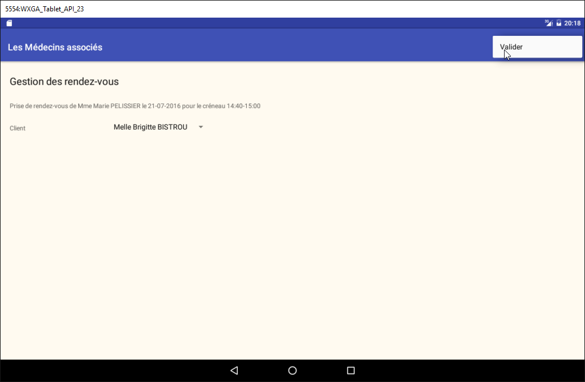
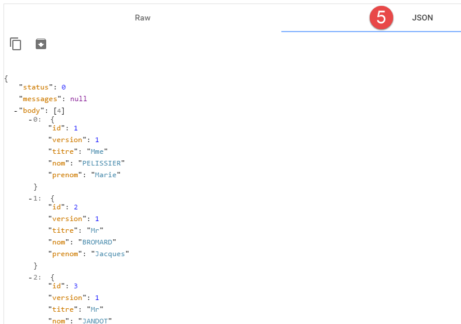
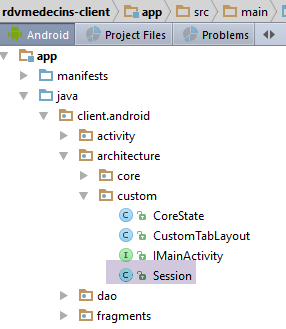
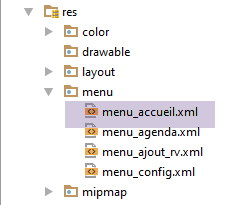
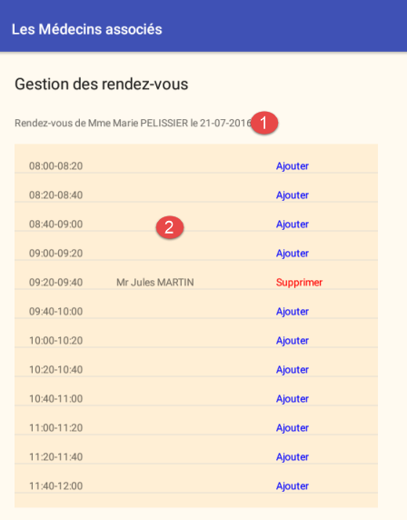
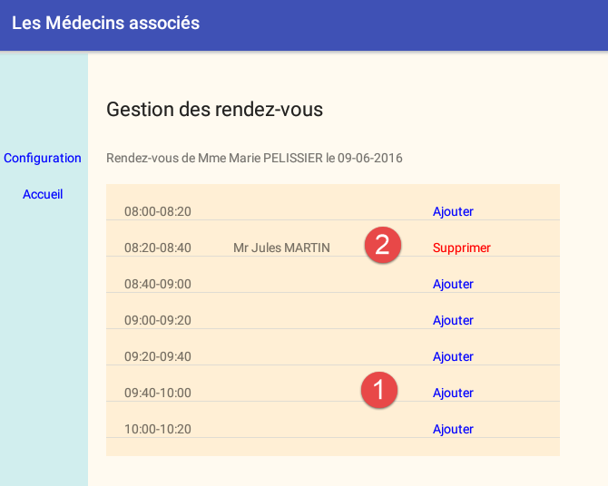

3. مطالعه موردی – مدیریت قرار ملاقاتها
3.1. پروژه
در سند [Tutoriel AngularJS / Spring 4]، یک برنامهٔ کلاینت/سرور برای مدیریت قرار ملاقاتهای پزشکان توسعه یافت. از این پس به این سند [rdvmedecins-angular] خواهیم گفت. این برنامه دو نوع کلاینت داشت:
- یک کلاینت HTML / CSS / JS؛
- یک کلاینت اندروید؛
کلاینت اندروید بهطور خودکار از نسخه HTML کلاینت با استفاده از ابزار [Cordova] تولید شد. هدف در اینجا بازسازی دستی این کلاینت اندروید با استفاده از دانش کسبشده در فصلهای قبلی است.
شایان ذکر است که تفاوت قابل توجهی بین این دو راهحل وجود دارد:
- نسخهای که ما قصد ساخت آن را داریم، تنها روی تبلتهای اندرویدی قابل استفاده خواهد بود؛
- در نسخه [rdvmedecins-angular]، کلاینت وب موبایل (HTML / CSS / JS) را میتوان روی هر پلتفرمی (اندروید، IoS، ویندوز) استفاده کرد؛
3.2. نماهای کلاینت اندروید
چهار نما وجود دارد.
نمایه پیکربندی

نمایش انتخاب پزشک و تاریخ قرار ملاقات

نمای انتخاب بازه زمانی قرار ملاقات

نمایش انتخاب مشتری قرار ملاقات

3.3. معماری پروژه
ما یک معماری کلاینت/سرور مشابه با آنچه در مثال [Exemple-15] (به بخش 1.16 این سند مراجعه کنید) وجود دارد، خواهیم داشت:

ارتباط غیرهمزمان بین کلاینت و سرور با استفاده از کتابخانه RxAndroid مدیریت خواهد شد.
3.4. پایگاه داده
این نقش بنیادینی در این سند ندارد. ما این اطلاعات را صرفاً برای مرجع ارائه میدهیم. به آن [dbrdvmedecins] گفته میشود. این یک پایگاه داده MySQL5 است که شامل چهار جدول میباشد:
 |
3.4.1. جدول [MEDECINS]
این پایگاه داده حاوی اطلاعاتی دربارهٔ پزشکان مدیریتشده توسط برنامهٔ [RdvMedecins] است.
 |  |
- ID: شماره شناسایی پزشک – کلید اصلی جدول
- VERSION: شمارهای که نسخهٔ سطر در جدول را شناسایی میکند. این شماره هر بار که تغییری در سطر ایجاد میشود، یک واحد افزایش مییابد.
- NOM: نام خانوادگی پزشک
- PRENOM: نام کوچک آنها
- TITRE: عنوان آنها (خانم، بانو، آقا)
3.4.2. جدول [CLIENTS]
بیماران پزشکان مختلف در جدول [CLIENTS] ثبت میشوند:
 |  |
- ID: شماره شناسه مشتری – کلید اصلی جدول
- VERSION: شمارهای که نسخهٔ سطر در جدول را شناسایی میکند. این شماره هر بار که تغییری در سطر ایجاد شود، یک واحد افزایش مییابد.
- NOM: نام خانوادگی مشتری
- PRENOM: نام کوچک مشتری
- TITRE: عنوان (خانم، بانو، آقا)
3.4.3. جدول [CRENEAUX]
این جدول بازههای زمانی را که RV ممکن است نمایش میدهد:
 |
 |  |  |
- ID: شمارهای که جایگاه زمانی را شناسایی میکند – کلید اصلی جدول (ردیف 8)
- VERSION: شمارهای که نسخهٔ سطر در جدول را شناسایی میکند. این شماره هر بار که تغییری در سطر ایجاد میشود، ۱ واحد افزایش مییابد.
- ID_MEDECIN: شمارهای که پزشک مربوط به این اسلات را شناسایی میکند – کلید خارجی روی ستون MEDECINS (ID).
- HDEBUT: زمان شروع اسلات
- MDEBUT: دقیقه شروع اسلات
- HFIN: زمان پایان اسلات
- MFIN: دقیقه پایان اسلات
ردهی دوم جدول [CRENEAUX] (به [1] بالا مراجعه کنید) نشان میدهد، برای مثال، که نوبت شمارهٔ ۲ از ساعت ۸:۲۰ شروع و در ساعت ۸:۴۰ پایان مییابد و به پزشک شمارهٔ ۱ اختصاص داده شده است. (خانم ماری PELISSIER).
3.4.4. جدول [RV]
ورودیهای RV را برای هر پزشک فهرست میکند:
 |  |
- ID: شناسه یکتا برای RV – کلید اصلی
- JOUR: روز RV
- ID_CRENEAU: بازه زمانی برای RV – کلید خارجی روی فیلد [ID] در جدول [CRENEAUX] – هم بازه زمانی و هم پزشک مربوطه را مشخص میکند.
- ID_CLIENT: شماره مشتری که رزرو برای او انجام میشود – کلید خارجی روی فیلد [ID] در جدول [CLIENTS]
این جدول دارای محدودیت یکتایی بر روی « » برای مقادیر در ستونهای الحاقی (JOUR, ID_CRENEAU) است:
اگر یک ردیف در جدول [RV] دارای مقدار (JOUR1, ID_CRENEAU1) برای ستونها (JOUR, ID_CRENEAU)، این مقدار نباید در هیچ جای دیگری ظاهر شود. در غیر این صورت، این بدان معناست که دو رکورد RV همزمان برای یک پزشک ایجاد شدهاند. از منظر برنامهنویسی جاوا، درایور JDBC در پایگاه داده هنگام وقوع این رویداد، یک SQLException را فعال میکند.
ورودی مربوط به id با مقدار ۳ (رجوع شود به [1] در بالا) نشان میدهد که یک RV برای اسلات شماره ۲۰ و مشتری شماره ۴ در تاریخ ۲۳ اوت ۲۰۰۶ رزرو شده است. جدول [CRENEAUX] به ما میگوید که اسلات شمارهٔ ۲۰ معادل بازهٔ زمانی ۱۶:۲۰–۱۶:۴۰ است و متعلق به پزشک شمارهٔ ۱ (خانم ماری PELISSIER) میباشد. جدول [CLIENTS] نشان میدهد که مشتری شمارهٔ ۴ خانم بریژیت BISTROU است.
3.4.5. ایجاد پایگاه داده
برای ایجاد جداول و پر کردن آنها، میتوانید از اسکریپت [dbrdvmedecins.sql] استفاده کنید که در آرشیو مثالها |ICI| موجود است.
 |
با استفاده از [WampServer] (به بخش 6.15 مراجعه کنید)، میتوانید به شرح زیر عمل کنید:
 |  |
- در [1]، روی آیکون [WampServer] کلیک کرده و گزینه [PhpMyAdmin] [2] را انتخاب کنید،
- در [3]، در پنجرهای که باز شده است، پیوند [Bases de données] را انتخاب کنید،
 |
- به [4-6]، یک فایل SQL را وارد کنید،
 |  |  |
- در [7]، اسکریپت SQL را انتخاب کرده و در [8] آن را اجرا کنید،
- در [9]، جداول پایگاه داده ایجاد شدهاند. یکی از پیوندها را دنبال کنید،
 |
- در [10]، محتویات جدول.
ما پس از این به این پایگاه داده بازنمیگردیم، اما از خواننده دعوت میشود تا با پیشرفت آزمایشها، بهویژه زمانی که برنامه به درستی کار نمیکند، روند توسعه آن را دنبال کند.
3.5. سرور وب / jSON
در اینجا ما بر روی سرور [1] تمرکز میکنیم. ما آن را بیشتر توسعه نخواهیم داد. این سرور در سند [Spring MVC et Thymeleaf par l'exemple] به تفصیل توصیف شده است. خوانندگان علاقهمند میتوانند به آن سند مراجعه کنند. این سرور به همان شیوهای که در مثال ۱۵ توسعه داده شده است، توسعه یافته است. کد منبع آن در مثالها گنجانده شده است. در اینجا از باینری آن استفاده خواهیم کرد:
 |
- [rdvmedecins-server-all-1.0.jar] باینری سرور است؛
3.5.1. پیادهسازی
در یک پنجرهٔ فرمان، به پوشهای که حاوی باینری سرور است، بروید:
...\rdvmedecins>dir
Le volume dans le lecteur D s’appelle Données
Le numéro de série du volume est 7A34-AE5F
Répertoire de D:\data\istia-1516\projets\dvp-android-studio\rdvmedecins
09/06/2016 10:50 <DIR> .
09/06/2016 10:50 <DIR> ..
06/07/2014 16:36 7 631 dbrdvmedecins.sql
08/06/2016 16:31 <DIR> rdvmedecins-client
08/06/2016 16:22 <DIR> rdvmedecins-server
08/06/2016 16:23 29 618 709 rdvmedecins-server-all-1.0.jar
سپس، برای راهاندازی سرور، دستور زیر را وارد کنید (SGBD و MySQL باید از قبل در حال اجرا باشند):
...\rdvmedecins>java -jar rdvmedecins-server-all-1.0.jar
. ____ _ __ _ _
/\\ / ___'_ __ _ _(_)_ __ __ _ \ \ \ \
( ( )\___ | '_ | '_| | '_ \/ _` | \ \ \ \
\\/ ___)| |_)| | | | | || (_| | ) ) ) )
' |____| .__|_| |_|_| |_\__, | / / / /
=========|_|==============|___/=/_/_/_/
:: Spring Boot :: (v1.0)
10:55:48.617 [main] INFO rdvmedecins.boot.Boot - Starting Boot v1.0 on st-PC (D:\data\istia-1516\projets\dvp-android-studio\rdvmedecins\rdvmedecins-server-all-1.0.jar started by st in D:\data\istia-1516\projets\dvp-android-studio\rdvmedecins)
10:55:48.621 [main] INFO rdvmedecins.boot.Boot - No active profile set, falling back to default profiles: default
10:55:48.662 [main] INFO o.s.b.c.e.AnnotationConfigEmbeddedWebApplicationContext - Refreshing org.springframework.boot.context.embedded.AnnotationConfigEmbeddedWebApplicationContext@7085bdee: startup date [Thu Jun 09 10:55:48 CEST 2016]; root of context hierarchy
10:55:49.948 [main] INFO o.s.b.c.e.t.TomcatEmbeddedServletContainer - Tomcat initialized with port(s): 8080 (http)
juin 09, 2016 10:55:50 AM org.apache.catalina.core.StandardService startInternal
INFOS: Starting service Tomcat
juin 09, 2016 10:55:50 AM org.apache.catalina.core.StandardEngine startInternal
INFOS: Starting Servlet Engine: Apache Tomcat/8.0.33
juin 09, 2016 10:55:50 AM org.apache.catalina.core.ApplicationContext log
INFOS: Initializing Spring embedded WebApplicationContext
10:55:50.255 [localhost-startStop-1] INFO o.s.web.context.ContextLoader - Root
WebApplicationContext: initialization completed in 1596 ms
...
10:55:55.765 [localhost-startStop-1] INFO o.s.s.web.DefaultSecurityFilterChain
- Creating filter chain: ...]
10:55:55.785 [localhost-startStop-1] INFO o.s.b.c.e.ServletRegistrationBean - Mapping servlet: 'dispatcherServlet' to [/*]
10:55:55.791 [localhost-startStop-1] INFO o.s.b.c.e.FilterRegistrationBean - Mapping filter: 'springSecurityFilterChain' to: [/*]
...
10:55:56.249 [main] INFO o.s.w.s.m.m.a.RequestMappingHandlerMapping - Mapped "{[/getAllCreneaux/{idMedecin}],methods=[GET],produces=[application/json;charset=UTF-8]}" onto public java.lang.String rdvmedecins.controllers.RdvMedecinsController.getAllCreneaux(long,javax.servlet.http.HttpServletResponse,java.lang.String)
throws com.fasterxml.jackson.core.JsonProcessingException
10:55:56.252 [main] INFO o.s.w.s.m.m.a.RequestMappingHandlerMapping - Mapped "{[/getRvMedecinJour/{idMedecin}/{jour}],methods=[GET],produces=[application/json;charset=UTF-8]}" onto public java.lang.String rdvmedecins.controllers.RdvMedecinsController.getRvMedecinJour(long,java.lang.String,javax.servlet.http.HttpServletResponse,java.lang.String) throws com.fasterxml.jackson.core.JsonProcessingException
10:55:56.255 [main] INFO o.s.w.s.m.m.a.RequestMappingHandlerMapping - Mapped "{[/getCreneauById/{id}],methods=[GET],produces=[application/json;charset=UTF-8]}" onto public java.lang.String rdvmedecins.controllers.RdvMedecinsController.getCreneauById(long,javax.servlet.http.HttpServletResponse,java.lang.String) throws
com.fasterxml.jackson.core.JsonProcessingException
10:55:56.257 [main] INFO o.s.w.s.m.m.a.RequestMappingHandlerMapping - Mapped "{[/ajouterRv],methods=[POST],consumes=[application/json;charset=UTF-8],produces=[application/json;charset=UTF-8]}" onto public java.lang.String rdvmedecins.controllers.RdvMedecinsController.ajouterRv(rdvmedecins.models.PostAjouterRv,javax.servlet.http.HttpServletResponse,java.lang.String) throws com.fasterxml.jackson.core.JsonProcessingException
10:55:56.259 [main] INFO o.s.w.s.m.m.a.RequestMappingHandlerMapping - Mapped "{[/getAllClients],methods=[GET],produces=[application/json;charset=UTF-8]}" onto
public java.lang.String rdvmedecins.controllers.RdvMedecinsController.getAllClients(javax.servlet.http.HttpServletResponse,java.lang.String) throws com.fasterxml.jackson.core.JsonProcessingException
10:55:56.261 [main] INFO o.s.w.s.m.m.a.RequestMappingHandlerMapping - Mapped "{[/getClientById/{id}],methods=[GET],produces=[application/json;charset=UTF-8]}"
onto public java.lang.String rdvmedecins.controllers.RdvMedecinsController.getClientById(long,javax.servlet.http.HttpServletResponse,java.lang.String) throws com.fasterxml.jackson.core.JsonProcessingException
10:55:56.264 [main] INFO o.s.w.s.m.m.a.RequestMappingHandlerMapping - Mapped "{[/getMedecinById/{id}],methods=[GET],produces=[application/json;charset=UTF-8]}" onto public java.lang.String rdvmedecins.controllers.RdvMedecinsController.getMedecinById(long,javax.servlet.http.HttpServletResponse,java.lang.String) throws com.fasterxml.jackson.core.JsonProcessingException
10:55:56.266 [main] INFO o.s.w.s.m.m.a.RequestMappingHandlerMapping - Mapped "{[/getRvById/{id}],methods=[GET],produces=[application/json;charset=UTF-8]}" onto public java.lang.String rdvmedecins.controllers.RdvMedecinsController.getRvById(long,javax.servlet.http.HttpServletResponse,java.lang.String) throws com.fasterxml.jackson.core.JsonProcessingException
10:55:56.268 [main] INFO o.s.w.s.m.m.a.RequestMappingHandlerMapping - Mapped "{[/getAllMedecins],methods=[GET],produces=[application/json;charset=UTF-8]}" onto public java.lang.String rdvmedecins.controllers.RdvMedecinsController.getAllMedecins(javax.servlet.http.HttpServletResponse,java.lang.String) throws com.fasterxml.jackson.core.JsonProcessingException
10:55:56.270 [main] INFO o.s.w.s.m.m.a.RequestMappingHandlerMapping - Mapped "{[/supprimerRv],methods=[POST],consumes=[application/json;charset=UTF-8],produces=[application/json;charset=UTF-8]}" onto public java.lang.String rdvmedecins.controllers.RdvMedecinsController.supprimerRv(rdvmedecins.models.PostSupprimerRv,javax.servlet.http.HttpServletResponse,java.lang.String) throws com.fasterxml.jackson.core.JsonProcessingException
10:55:56.273 [main] INFO o.s.w.s.m.m.a.RequestMappingHandlerMapping - Mapped "{[/authenticate],methods=[GET],produces=[application/json;charset=UTF-8]}" onto public java.lang.String rdvmedecins.controllers.RdvMedecinsController.authenticate(javax.servlet.http.HttpServletResponse,java.lang.String) throws com.fasterxml.jackson.core.JsonProcessingException
10:55:56.276 [main] INFO o.s.w.s.m.m.a.RequestMappingHandlerMapping - Mapped "{[/getAgendaMedecinJour/{idMedecin}/{jour}],methods=[GET],produces=[application/json;charset=UTF-8]}" onto public java.lang.String rdvmedecins.controllers.RdvMedecinsController.getAgendaMedecinJour(long,java.lang.String,javax.servlet.http.HttpServletResponse,java.lang.String) throws com.fasterxml.jackson.core.JsonProcessingException
...
10:55:56.681 [main] INFO o.s.b.c.e.t.TomcatEmbeddedServletContainer - Tomcat started on port(s): 8080 (http)
10:55:56.686 [main] INFO rdvmedecins.boot.Boot - Started Boot in 8.231 seconds
سرور لاگهای متعددی را نمایش میدهد. ما تنها لاگهای مرتبط با درک فرآیند فوق را گنجاندهایم:
- خطوط ۱۴–۱۸: یک سرور Tomcat تعبیهشده روی پورت ۸۰۸۰ ماشین در حال اجرا است. این سرور است که برنامه مدیریت قرار ملاقات مبتنی بر وب را اجرا میکند. این برنامه در واقع یک سرویس وب / jSON است: از طریق URL به آن پرسوجو میشود و با ارسال یک رشته jSON پاسخ میدهد؛
- خط ۲۴: سرویس وب با استفاده از چارچوب [Spring Security] ایمنسازی شده است. به URL سرویس وب از طریق احراز هویت دسترسی پیدا میشود؛
- خطوط ۲۹–۴۴: URL که توسط سرویس وب در معرض دید قرار گرفته است؛
ما در مورد این موارد به تفصیل بیشتری خواهیم پرداخت.
3.5.2. امنسازی سرویس وب
منابع URL که توسط سرویس وب در معرض دید قرار گرفتهاند، امن شدهاند. سرور انتظار دارد در درخواست HTTP مشتری، هدر زیر را دریافت کند:
کد مورد انتظار رشته Base64 رمزگذاریشده [http://fr.wikipedia.org/wiki/Base64] است که نمایانگر رشته 'username:password' میباشد. در وضعیت اولیه، سرویس وب تنها کاربر با نام 'admin' و رمز عبور 'admin' را میپذیرد. برای این کاربر خاص، هدر فوق به خط زیر تبدیل میشود:
برای ارسال این هدر HTTP، از کلاینت HTTP [Advanced Rest Client] استفاده میکنیم که یک افزونه مرورگر کروم است (به بخش 6.13 مراجعه کنید). ما پاسخهای مختلف URL را که توسط سرویس وب بازگردانده میشوند، بهصورت دستی آزمایش خواهیم کرد تا بفهمیم:
- پارامترهای مورد انتظار توسط URL؛
- ماهیت دقیق پاسخ آن؛
3.5.3. فهرست پزشکان
URL [/getAllMedecins] به شما امکان میدهد فهرست پزشکان را بازیابی کنید:
 |
- در [1]، پرسوجوی URL؛
- در [2]، متد HTTP برای این پرسوجو استفاده میشود؛
- در [3]، هدر امنیتی کاربر HTTP (admin, admin);
- در [4]، درخواست HTTP ارسال میشود؛
پاسخ سرور به شرح زیر است:
 |
- در [5]، پاسخ سرور jSON، قالببندی شده است؛
 |
- به صورت [6]، همان پاسخ در شکل خام؛
قالب [5] مشاهده ساختار پاسخ را آسانتر میکند. تمام پاسخهای سرویس وب نمونههایی از کلاس زیر [Response] هستند:
package rdvmedecins.android.dao.service;
import java.util.List;
public class Response<T> {
// ----------------- ویژگیها
//وضعیت عملیات
private int status;
// هرگونه پیام خطا
private List<String> messages;
// بدنه پاسخ
private T body;
// سازندهها
public Response() {
}
public Response(int status, List<String> messages, T body) {
this.status = status;
this.messages = messages;
this.body = body;
}
// گیرندهها و تنظیمکنندهها
...
}
- خط ۹: وضعیت پاسخ. مقدار ۰ به معنای عدم وجود خطا است؛ در غیر این صورت، خطایی رخ داده است؛
- خط ۱۱: فهرستی از پیامهای خطا در صورت وقوع خطا؛
- خط ۱۳: پاسخی که در واقع توسط کلاینت انتظار میرود؛
پاسخ به URL [/getAllMedecins]، رشته jSON از یک شیء از نوع [Response<List<Medecin>>] است. کلاس [Medecin] به شرح زیر است:
package rdvmedecins.android.dao.entities;
public class Medecin extends Personne {
// سازنده پیشفرض
public Medecin() {
}
// سازنده با پارامترها
public Medecin(String titre, String nom, String prenom) {
super(titre, nom, prenom);
}
public String toString() {
return String.format("Medecin[%s]", super.toString());
}
}
خط ۳: کلاس [Medecin] از کلاس زیر [Personne] ارث میبرد:
package rdvmedecins.android.dao.entities;
public class Personne extends AbstractEntity {
// ویژگیهای یک شخص
private String titre;
private String nom;
private String prenom;
// سازنده پیشفرض
public Personne() {
}
// سازنده با پارامترها
public Personne(String titre, String nom, String prenom) {
this.titre = titre;
this.nom = nom;
this.prenom = prenom;
}
// toString
public String toString() {
return String.format("Personne[%s, %s, %s, %s, %s]", id, version, titre, nom, prenom);
}
// گیرنده و تنظیمکننده
...
}
خط ۳: کلاس [Personne] از کلاس زیر [AbstractEntity] ارث میبرد:
package rdvmedecins.android.dao.entities;
import java.io.Serializable;
public class AbstractEntity implements Serializable {
private static final long serialVersionUID = 1L;
protected Long id;
protected Long version;
@Override
public int hashCode() {
int hash = 0;
hash += (id != null ? id.hashCode() : 0);
return hash;
}
// ابتداییسازی
public AbstractEntity build(Long id, Long version) {
this.id = id;
this.version = version;
return this;
}
@Override
public boolean equals(Object entity) {
String class1 = this.getClass().getName();
String class2 = entity.getClass().getName();
if (!class2.equals(class1)) {
return false;
}
AbstractEntity other = (AbstractEntity) entity;
return this.id == other.id;
}
// گیرنده و تنظیمکننده
...
}
در نهایت، ساختار یک شیء [Medecin] به شرح زیر است:
[Long id; Long version; String titre; String nom; String prenom;]
و ساختار [Response<List<Medecin>>] به شرح زیر است:
از این پس، برای توصیف پاسخ سرور از این تعاریف مخفف استفاده خواهیم کرد. علاوه بر این، فعلاً دیگر از اسکرینشات استفاده نخواهیم کرد. تکرار سادهای از آنچه به تازگی دیدهایم کافی است. هنگام ارسال درخواست POST به اسکرینشاتها باز خواهیم گشت. ما همچنین یک مثال از اجرا را در قالب زیر ارائه خواهیم داد:
3.5.4. فهرست مشتریان
| |
|
مثال:
3.5.5. فهرست نوبتهای ویزیت پزشک
|
- [idMedecin]: شناسهٔ پزشکی که میخواهید نوبتهای او را مشاهده کنید؛
- [hdebut]: زمان شروع مشاوره؛
- [mdebut]: دقیقهای که مشاوره آغاز میشود؛
- [hfin]: زمان پایان مشاوره؛
- [mfin]: دقیقه پایانی مشاوره؛
برای یک بازه زمانی بین ۱۰:۲۰ و ۱۰:۴۰، ما خواهیم داشت [hdebut, mdebut, hfin, mfin]=[10, 20, 10, 40].
مثال:
3.5.6. فهرست قرارهای ملاقات پزشک
|
- [idMedecin]: شناسهٔ پزشکی که قرار ملاقاتهای او مورد نیاز است؛
- URL [jour]: تاریخ قرار ملاقاتها به فرمت 'yyyy-mm-dd';
- پاسخ [jour]: مشابه مورد بالا، اما به صورت یک تاریخ جاوا؛
- [client]: کلاینت برای قرار ملاقات. ساختار آن قبلاً توضیح داده شده است؛
- [idClient]: شناسهی مشتری؛
- [creneau]: شکاف قرار ملاقات. ساختار آن قبلاً توصیف شده است؛
- [idCreneau]: شناسه اسلات؛
مثال:
3.5.7. دفترچه خاطرات یک دکتر
|
- [idMedecin]: شناسهٔ پزشکی که قرار ملاقاتهای او مورد نیاز است؛
- URL [jour]: تاریخ قرار ملاقاتها به فرمت 'سال-ماه-روز';
- [agenda]: دفترچه یادداشت پزشک؛
- [medecin]: پزشک مورد نظر. ساختار آن قبلاً تعریف شده است؛
- پاسخ [jour]: تاریخ دفترچه یادداشت به صورت یک تاریخ جاوا؛
- [creneauxMedecinJour]: آرایهای از عناصر از نوع [CreneauMedecinJour];
- [creneau]: یک بازه زمانی. ساختار آن قبلاً توصیف شده است؛
- [rv]: یک قرار ملاقات. ساختار آن قبلاً توصیف شده است؛
مثال:
|
ما مواردی را که در بازه زمانی قرار ملاقات وجود دارد و مواردی را که ندارد، برجسته کردهایم.
3.5.8. پیدا کردن پزشک بر اساس شناسه
|
- [idMedecin]: شماره شناسایی پزشک؛
مثال ۱:
مثال ۲:
3.5.9. بازیابی یک مشتری بر اساس شناسه آن
|
- [idClient]: شناسه مشتری؛
مثال ۱:
مثال ۲:
3.5.10. بازیابی یک اسلات بر اساس شناسهٔ آن
|
- [idCreneau]: شناسه اسلات؛
مثال ۱:
توجه داشته باشید که پاسخ شامل نام پزشکی که اسلات را در اختیار دارد نیست، بلکه تنها شناسه او را شامل میشود.
مثال ۲:
3.5.11. با استفاده از شناسه خود وقت ملاقات رزرو کنید
|
- [idRv]: شناسه قرار ملاقات؛
مثال ۱:
توجه کنید که پاسخ حاوی نام مشتری یا بازه زمانی قرار ملاقات نیست، بلکه تنها شناسههای آنها را شامل میشود.
مثال ۲:
3.5.12. افزودن قرار ملاقات
URL [/ajouterRv] به شما امکان میدهد یک قرار ملاقات اضافه کنید. اطلاعات مورد نیاز برای افزودن یک قرار ملاقات (روز، بازه زمانی و مشتری) از طریق درخواست HTTP POST ارسال میشود. ما نشان میدهیم چگونه این درخواست را با استفاده از ابزار [Advanced Rest Client] انجام دهیم.

- در [1]، از URL پرسوجو میشود؛
- در [2]، توسط POST پرسوجو میشود؛
- در [3-4]، به سرور اطلاع داده میشود که مقادیر ارسالشده به آن به شکل یک رشته jSON است؛
- در [4]، هدر احراز هویت HTTP؛
- در [5]، اطلاعاتی که توسط POST منتقل میشود. این یک رشته jSON است که شامل:
- [jour]: تاریخ قرار ملاقات به فرمت 'yyyy-mm-dd'،
- [idClient]: شناسه بیمارِ رزروکننده وقت ملاقات،
- [idCreneau]: شناسهی بازهی زمانی قرار ملاقات. از آنجا که یک بازهی زمانی به پزشک خاصی تعلق دارد، این شناسه نیز پزشک را مشخص میکند؛
- در [6]، درخواست ارسال میشود؛
رشته jSON که ارسال میشود، با شی زیر از نوع [PostAjouterRv] مطابقت دارد:
public class PostAjouterRv {
// دادهٔ ارسال
private String jour;
private long idClient;
private long idCreneau;
// سازندهها
public PostAjouterRv() {
}
public PostAjouterRv(String jour, long idCreneau, long idClient) {
this.jour = jour;
this.idClient = idClient;
this.idCreneau = idCreneau;
}
// گیرندهها و تنظیمکنندهها
...
}
پاسخ سرور از نوع [Response<Rv>] [int status; List<String> messages; Rv rv] است، که در آن [rv] قرار ملاقات افزودهشده است.
پاسخ سرور به درخواست فوق به شرح زیر است:
 |
در بالا باید توجه داشت که برخی جزئیات در [idClient, idCreneau] گنجانده نشدهاند اما میتوان آنها را در فیلدهای [client] و [creneau] یافت. بخش کلیدی اطلاعات، شناسه قرار ملاقات اضافه شده (209) است. سرویس وب میتوانست به سادگی این یک مورد اطلاعات را بازگرداند.
3.5.13. حذف یک قرار ملاقات
این عملیات نیز با استفاده از POST انجام میشود:
|
مقدار ارسالشده رشته jSON از شیء زیر از نوع [PostSupprimerRv] است:
public class PostSupprimerRv {
// دادههای پست
private long idRv;
// سازندهها
public PostSupprimerRv() {
}
public PostSupprimerRv(long idRv) {
this.idRv = idRv;
}
// گیرندهها و تنظیمکنندهها
...
}
- خط ۴، [idRv] شناسه قرار ملاقاتی است که باید حذف شود.
مثال ۱:
قرار ملاقات شمارهٔ 209 در واقع به دلیل [status=0] لغو شده است.
مثال ۲:
3.6. کلاینت اندروید
اکنون که سرور [1] به تفصیل توصیف شده و در حال اجراست، به کلاینت اندروید [2] خواهیم پرداخت.
3.6.1. معماری پروژه اندروید استودیو
این پروژه معماری پروژه [client-android-skel] را دنبال میکند (به بخش 1.17 مراجعه کنید). در معماری کلاینت اندروید که در بالا نشان داده شده است، سه مؤلفه متمایز وجود دارد:
- لایه [DAO]، مسئول ارتباط با سرویس وب؛
- کامپوننتهای [vues] که مسئول ارتباط با کاربر هستند؛
- [activité] که بهعنوان پیوندی بین دو بلوک قبلی عمل میکند. ویوها از لایه [DAO] مطلع نیستند. آنها تنها با اکتیویتی ارتباط برقرار میکنند.
این معماری در ساختار پروژه اندروید استودیو برای کلاینت اندروید منعکس شده است:
 |
- پکیج [activity] فعالیت را پیادهسازی میکند؛
- پکیج [architecture] عناصر معماری را که قبلاً توسعه دادیم، در خود جای داده است؛
- پکیج [dao] لایه [DAO] را پیادهسازی میکند؛
- بسته [fragments]، [vues] را پیادهسازی میکند؛
3.6.2. سفارشیسازی پروژه
 |
پوشه [architecture / custom] شامل عناصر قابل سفارشیسازی معماری است.
رابط [IMainActivity] به شرح زیر است:
package client.android.architecture.custom;
import client.android.architecture.core.ISession;
import client.android.dao.service.IDao;
public interface IMainActivity extends IDao {
//دسترسی به جلسه
ISession getSession();
// تغییر نما
void navigateToView(int position, ISession.Action action);
// مدیریت صف
void beginWaiting();
void cancelWaiting();
// ثوابت برنامه -------------------------------------
// حالت اشکالزدایی
boolean IS_DEBUG_ENABLED = true;
//حداکثر زمان انتظار برای پاسخ سرور
int TIMEOUT = 1000;
// زمان انتظار قبل از اجرای درخواست کلاینت
int DELAY = 000;
// احراز هویت پایه
boolean IS_BASIC_AUTHENTIFICATION_NEEDED = true;
// همجواری قطعه
int OFF_SCREEN_PAGE_LIMIT = 1;
//نوار برگه
boolean ARE_TABS_NEEDED = false;
// بارگذاری تصویر
boolean IS_WAITING_ICON_NEEDED = true;
// تعداد قطعات برنامه
int FRAGMENTS_COUNT = 4;
// تعداد بازدیدها
int VUE_CONFIG = 0;
int VUE_ACCUEIL = 1;
int VUE_AGENDA = 2;
int VUE_AJOUT_RV = 3;
}
- خطوط ۲۵ و ۲۸: سفارشیسازی لایه [DAO]؛
- خط ۳۱: این برنامه درخواستهای احراز هویتشده را به سرور ارسال میکند؛
- خط ۴۰: یک تصویر بارگذاری لازم است؛
- خط ۴۳: این برنامه دارای چهار قطعه است؛
- خطوط ۴۶–۴۹: شمارههای چهار قطعه؛
- خط ۳۷: هیچ زبانی وجود ندارد؛
کلاس پایه [CoreState] برای وضعیتهای فرگمنت به شرح زیر خواهد بود:
package client.android.architecture.custom;
import client.android.architecture.core.MenuItemState;
import client.android.fragments.state.AccueilFragmentState;
import client.android.fragments.state.AgendaFragmentState;
import client.android.fragments.state.AjoutRvFragmentState;
import client.android.fragments.state.ConfigFragmentState;
import com.fasterxml.jackson.annotation.JsonIgnoreProperties;
import com.fasterxml.jackson.annotation.JsonSubTypes;
import com.fasterxml.jackson.annotation.JsonTypeInfo;
@JsonIgnoreProperties(ignoreUnknown = true)
@JsonTypeInfo(use = JsonTypeInfo.Id.NAME, include = JsonTypeInfo.As.PROPERTY)
@JsonSubTypes({
@JsonSubTypes.Type(value = AccueilFragmentState.class),
@JsonSubTypes.Type(value = AgendaFragmentState.class),
@JsonSubTypes.Type(value = AjoutRvFragmentState.class),
@JsonSubTypes.Type(value = ConfigFragmentState.class)
}
)
public class CoreState {
// اینکه آیا قطعه بازدید شده است یا خیر
protected boolean hasBeenVisited = false;
//وضعیت منوی قطعه (در صورت وجود)
protected MenuItemState[] menuOptionsState;
// گیرنده و تنظیمکننده
...
}
- خطوط ۱۵–۱۸: چهار قطعه وضعیت دارند:
 |
در نهایت، جلسه حاوی دادههای مشترک بین قطعات است:
package client.android.architecture.custom;
import client.android.architecture.core.AbstractSession;
import client.android.dao.entities.AgendaMedecinJour;
import client.android.dao.entities.Client;
import client.android.dao.entities.Medecin;
import client.android.fragments.state.AccueilFragmentState;
import client.android.fragments.state.AgendaFragmentState;
import client.android.fragments.state.AjoutRvFragmentState;
import client.android.fragments.state.ConfigFragmentState;
import java.util.List;
public class Session extends AbstractSession {
// عناصری که نمیتوانند در jSON سریالیزه شوند باید دارای انوتیشن @JsonIgnore باشند
// فهرست پزشکان
private List<Medecin> médecins;
// فهرست مشتریان
private List<Client> clients;
//دفترچه یادداشت پزشک برای یک روز معین
private AgendaMedecinJour agenda;
//موقعیت آیتم کلیکشده در دفترچه یادداشت
private int position;
// تاریخ قرار ملاقات به فرمت انگلیسی «yyyy-MM-dd»
private String dayRv;
//تاریخ قرار ملاقات به فرمت فرانسوی "dd-MM-yyyy"
private String jourRv;
// گیرنده و تنظیمکننده
...
}
- خطوط ۱۷–۲۸: جلسه شش قطعه اطلاعات را ذخیره میکند. نقش این موارد را در صورت لزوم توضیح خواهیم داد.
3.6.3. لایه [DAO]
 |
 |  |
- در [1]، اشیایی که در پاسخهای سرور محصور شدهاند. این موارد در بخش 3.5 توصیف شدهاند؛
- در [2]، مؤلفههای کلاینت که ارتباط با سرور را مدیریت میکنند؛
ما دیگر به عناصر [1] بازنمیگردیم. این موارد قبلاً مورد بحث قرار گرفتهاند. از خواننده دعوت میشود در صورت لزوم به بخش 3.5 مراجعه کند. اکنون پیادهسازی بسته [service] را بررسی خواهیم کرد. این موضوع همچنین ما را به بحث پیادهسازی ارتباط امن بین کلاینت و سرور خواهد رساند.
3.6.3.1. پیادهسازی ارتباط کلاینت/سرور
 |
کلاس [WebClient] یک کامپوننت AA است که توصیف میکند:
- URL که توسط سرویس وب ارائه شده است؛
- پارامترهای آنها؛
- پاسخهای آنها؛
package rdvmedecins.android.dao.service;
import rdvmedecins.android.dao.entities.*;
import org.androidannotations.rest.spring.annotations.*;
import org.androidannotations.rest.spring.api.RestClientRootUrl;
import org.androidannotations.rest.spring.api.RestClientSupport;
import org.springframework.http.converter.json.MappingJackson2HttpMessageConverter;
import org.springframework.web.client.RestTemplate;
import java.util.List;
@Rest(converters = {MappingJackson2HttpMessageConverter.class})
public interface WebClient extends RestClientRootUrl, RestClientSupport {
//RestTemplate
public void setRestTemplate(RestTemplate restTemplate);
// فهرست پزشکان
@Get("/getAllMedecins")
public Response<List<Medecin>> getAllMedecins();
// فهرست مشتریان
@Get("/getAllClients")
public Response<List<Client>> getAllClients();
// فهرست اسلاتهای نوبتدهی پزشک
@Get("/getAllCreneaux/{idMedecin}")
public Response<List<Creneau>> getAllCreneaux(@Path long idMedecin);
//فهرست نوبتهای پزشک
@Get("/getRvMedecinJour/{idMedecin}/{jour}")
public Response<List<Rv>> getRvMedecinJour(@Path long idMedecin, @Path String jour);
// مشتری
@Get("/getClientById/{id}")
public Response<Client> getClientById(@Path long id);
// پزشک
@Get("/getMedecinById/{id}")
public Response<Medecin> getMedecinById(@Path long id);
// قرار ملاقات
@Get("/getRvById/{id}")
public Response<Rv> getRvById(@Path long id);
// زمانبندی
@Get("/getCreneauById/{id}")
public Response<Creneau> getCreneauById(@Path long id);
// افزودن یک RV
@Post("/ajouterRv")
public Response<Rv> ajouterRv(@Body PostAjouterRv post);
// حذف قرار ملاقات
@Post("/supprimerRv")
public Response<Rv> supprimerRv(@Body PostSupprimerRv post);
//دریافت تقویم قرار ملاقات پزشک
@Get(value = "/getAgendaMedecinJour/{idMedecin}/{jour}")
public Response<AgendaMedecinJour> getAgendaMedecinJour(@Path long idMedecin, @Path String jour);
}
- خطوط ۱۹–۶۰: تمام مؤلفههای URL که در بخش ۳.۵ مورد بحث قرار گرفتهاند، در اینجا فهرست شدهاند؛
- خط ۱۶: کامپوننت [RestTemplate] از [Spring Android] که ارتباط کلاینت/سرور بر اساس آن است؛
3.6.3.2. رابط [IDao]
 |
رابط [IDao] لایه [DAO] به شرح زیر است:
package rdvmedecins.android.dao.service;
import rdvmedecins.android.dao.entities.*;
import rx.Observable;
import java.util.List;
public interface IDao {
// آدرس URL سرویس وب
public void setUrlServiceWebJson(String url);
// کاربر
public void setUser(String user, String mdp);
// اتمام زمان مشتری
public void setTimeout(int timeout);
// فهرست مراجعهکنندگان
public Observable<List<Client>> getAllClients();
// فهرست پزشکان
public Observable<List<Medecin>> getAllMedecins();
// فهرست اسلاتهای قرار ملاقات پزشک
public Observable<List<Creneau>> getAllCreneaux(long idMedecin);
// فهرست قرارهای ملاقات پزشک در یک روز معین
public Observable<List<Rv>> getRvMedecinJour(long idMedecin, String jour);
// پیدا کردن مشتری بر اساس شناسه آن
public Observable<Client> getClientById(long id);
// پیدا کردن پزشک بر اساس شناسهٔ او
public Observable<Medecin> getMedecinById(long id);
//یافتن یک قرار ملاقات با شناسهٔ آن
public Observable<Rv> getRvById(long id);
// پیدا کردن یک بازه زمانی با شناسه آن
public Observable<Creneau> getCreneauById(long id);
// افزودن یک RV
public Observable<Rv> ajouterRv(String jour, long idCreneau, long idClient);
// حذف یک RV
public Observable<Rv> supprimerRv(long idRv);
// خط کسبوکار
public Observable<AgendaMedecinJour> getAgendaMedecinJour(long idMedecin, String jour);
// حالت اشکالزدایی
void setDebugMode(boolean isDebugEnabled);
}
- خط ۱۰: برای تنظیم URL برای سرویس وب / jSON;
- خط ۱۳: برای تعیین کاربر برای ارتباط کلاینت/سرور. [user] شناسه کاربری است، [mdp] رمز عبور است؛
- خط 16: برای تنظیم حداکثر زمان انتظار پاسخ سرور؛
- خطوط ۱۸–۴۹: هر URL که توسط سرویس وب ارائه شده است، با یک متد مطابقت دارد. آنها از امضاهای متد یکسانی با کامپوننتهای AA و [WebClient] استفاده میکنند؛
- خط ۵۲: برای کنترل حالت debug لایه [DAO]؛
3.6.3.3. کلاس [Dao]
 |
پیادهسازی [DAO] رابط قبلی [IDao] به شرح زیر است:
package client.android.dao.service;
import android.util.Log;
import client.android.dao.entities.*;
import org.androidannotations.annotations.AfterInject;
import org.androidannotations.annotations.Bean;
import org.androidannotations.annotations.EBean;
import org.androidannotations.rest.spring.annotations.RestService;
import org.springframework.http.client.ClientHttpRequestInterceptor;
import org.springframework.http.client.SimpleClientHttpRequestFactory;
import org.springframework.http.converter.json.MappingJackson2HttpMessageConverter;
import org.springframework.web.client.RestTemplate;
import rx.Observable;
import java.util.ArrayList;
import java.util.List;
@EBean(scope = EBean.Scope.Singleton)
public class Dao extends AbstractDao implements IDao {
// کلاینت سرویس وب
@RestService
protected WebClient webClient;
// امنیت
@Bean
protected MyAuthInterceptor authInterceptor;
// RestTemplate
private RestTemplate restTemplate;
// کارخانه برای RestTemplate
private SimpleClientHttpRequestFactory factory;
@AfterInject
public void afterInject() {
...
}
@Override
public void setUrlServiceWebJson(String url) {
...
}
@Override
public void setUser(String user, String mdp) {
...
}
@Override
public void setTimeout(int timeout) {
...
}
@Override
public void setBasicAuthentification(boolean isBasicAuthentificationNeeded) {
if (isDebugEnabled) {
Log.d(className, String.format("setBasicAuthentification thread=%s, isBasicAuthentificationNeeded=%s", Thread.currentThread().getName(), isBasicAuthentificationNeeded));
}
// مداخلهگر احراز هویت؟
if (isBasicAuthentificationNeeded) {
// interceptor احراز هویت اضافه شده است
List<ClientHttpRequestInterceptor> interceptors = new ArrayList<ClientHttpRequestInterceptor>();
interceptors.add(authInterceptor);
restTemplate.setInterceptors(interceptors);
}
}
// متدهای خصوصی -------------------------------------------------
private void log(String message) {
if (isDebugEnabled) {
Log.d(className, message);
}
}
//پیادهسازی رابط IDao --------------------------------------------------------------------
@Override
public Observable<Response<List<Client>>> getAllClients() {
// لاگ
log("getAllClients");
// نتیجه
return getResponse(new IRequest<Response<List<Client>>>() {
@Override
public Response<List<Client>> getResponse() {
return webClient.getAllClients();
}
});
}
@Override
public Observable<Response<List<Medecin>>> getAllMedecins() {
// لاگ
log("getAllMedecins");
// نتیجه
return getResponse(new IRequest<Response<List<Medecin>>>() {
@Override
public Response<List<Medecin>> getResponse() {
return webClient.getAllMedecins();
}
});
}
@Override
public Observable<Response<List<Creneau>>> getAllCreneaux(final long idMedecin) {
// log
log("getAllCreneaux");
// نتیجه
return getResponse(new IRequest<Response<List<Creneau>>>() {
@Override
public Response<List<Creneau>> getResponse() {
return webClient.getAllCreneaux(idMedecin);
}
});
}
@Override
public Observable<Response<List<Rv>>> getRvMedecinJour(final long idMedecin, final String jour) {
// log
log("getRvMedecinJour");
// نتیجه
return getResponse(new IRequest<Response<List<Rv>>>() {
@Override
public Response<List<Rv>> getResponse() {
return webClient.getRvMedecinJour(idMedecin, jour);
}
});
}
@Override
public Observable<Response<Client>> getClientById(final long id) {
// log
log("getClientById");
// نتیجه
return getResponse(new IRequest<Response<Client>>() {
@Override
public Response<Client> getResponse() {
return webClient.getClientById(id);
}
});
}
@Override
public Observable<Response<Medecin>> getMedecinById(final long id) {
// log
log("getMedecinById");
// نتیجه
return getResponse(new IRequest<Response<Medecin>>() {
@Override
public Response<Medecin> getResponse() {
return webClient.getMedecinById(id);
}
});
}
@Override
public Observable<Response<Rv>> getRvById(final long id) {
// log
log("getRvById");
// نتیجه
return getResponse(new IRequest<Response<Rv>>() {
@Override
public Response<Rv> getResponse() {
return webClient.getRvById(id);
}
});
}
@Override
public Observable<Response<Creneau>> getCreneauById(final long id) {
// log
log("getCreneauById");
// نتیجه
return getResponse(new IRequest<Response<Creneau>>() {
@Override
public Response<Creneau> getResponse() {
return webClient.getCreneauById(id);
}
});
}
@Override
public Observable<Response<Rv>> ajouterRv(final String jour, final long idCreneau, final long idClient) {
// log
log("ajouterRv");
// نتیجه
return getResponse(new IRequest<Response<Rv>>() {
@Override
public Response<Rv> getResponse() {
return webClient.ajouterRv(new PostAjouterRv(jour, idCreneau, idClient));
}
});
}
@Override
public Observable<Response<Rv>> supprimerRv(final long idRv) {
// log
log("supprimerRv");
// نتیجه
return getResponse(new IRequest<Response<Rv>>() {
@Override
public Response<Rv> getResponse() {
return webClient.supprimerRv(new PostSupprimerRv(idRv));
}
});
}
@Override
public Observable<Response<AgendaMedecinJour>> getAgendaMedecinJour(final long idMedecin, final String jour) {
// log
log("getAgendaMedecinJour");
// result
return getResponse(new IRequest<Response<AgendaMedecinJour>>() {
@Override
public Response<AgendaMedecinJour> getResponse() {
return webClient.getAgendaMedecinJour(idMedecin, jour);
}
});
}
}
- خطوط ۱۸–۷۲: اینها خطوط پیشفرض در کلاس [Dao] پروژه [client-android-skel] هستند؛
- خطوط ۷۴–۲۱۶: پیادهسازی رابط [IDao]. متدهایی که URL را پرسوجو میکنند، این پرسوجو را به کامپوننتهای AA و [WebClient] واگذار میکنند (خطوط 22–23);
- خطوط ۵۸–۶۳: اگر ارتباطات کلاینت/سرور با استفاده از احراز هویت پایه انجام شود، یک interceptor به کامپوننت [RestTemplate] اضافه میشود. این امر باعث میشود که هر درخواست HTTP که توسط کامپوننت [RestTemplate] صادر میشود، توسط کلاس [MyAuthInterceptor] (خطوط ۲۵–۲۶) رهگیری شود؛
کلاس [MyAuthInterceptor] به شرح زیر است:
package rdvmedecins.android.dao.security;
import org.androidannotations.annotations.Bean;
import org.androidannotations.annotations.EBean;
import org.springframework.http.HttpAuthentication;
import org.springframework.http.HttpBasicAuthentication;
import org.springframework.http.HttpHeaders;
import org.springframework.http.HttpRequest;
import org.springframework.http.client.ClientHttpRequestExecution;
import org.springframework.http.client.ClientHttpRequestInterceptor;
import org.springframework.http.client.ClientHttpResponse;
import java.io.IOException;
@EBean(scope = EBean.Scope.Singleton)
public class MyAuthInterceptor implements ClientHttpRequestInterceptor {
// کاربر
private String user;
private String mdp;
public ClientHttpResponse intercept(HttpRequest request, byte[] body, ClientHttpRequestExecution execution) throws IOException {
HttpHeaders headers = request.getHeaders();
HttpAuthentication auth = new HttpBasicAuthentication(user, mdp);
headers.setAuthorization(auth);
return execution.execute(request, body);
}
public void setUser(String user, String mdp) {
this.user = user;
this.mdp = mdp;
}
}
- خط ۱۵: کلاس [MyAuthInterceptor] یک کامپوننت از نوع [singleton] است که از AA مشتق شده است؛
- خط 16: کلاس [MyAuthInterceptor] رابط Spring [ClientHttpRequestInterceptor] را گسترش میدهد. این رابط یک متد دارد: متد [intercept] در خط 22. این رابط برای رهگیری هر درخواست HTTP از سمت کلاینت گسترش یافته است. متد [intercept] سه پارامتر میگیرد؛
- [HtpRequest request]: درخواست HTTP مخدوششده،
- [byte[] body]: بدنهٔ آن، در صورت وجود (مثلاً مقادیر ارسالشده با POST)،
- [ClientHttpRequestExecution execution]: کامپوننت Spring که درخواست را اجرا میکند؛
ما تمام درخواستهای HTTP از کلاینت اندروید را رهگیری میکنیم تا هدر احراز هویت HTTP را که در بخش ۳.۵ توضیح داده شده است، اضافه کنیم.
- خط ۲۳: ما هدرهای HTTP را از درخواست رهگیریشده بازیابی میکنیم؛
- خط ۲۴: ما هدر احراز هویت HTTP را ایجاد میکنیم. روش احراز هویت مورد استفاده (رمزگذاری Base64 رشته 'user:mdp') توسط کلاس Spring با نام [HttpBasicAuthentication] فراهم شده است؛
- خط ۲۵: هدر احراز هویتی که همین حالا ایجاد کردیم به هدرهای فعلی درخواست رهگیریشده اضافه میشود؛
- خط ۲۶: اجرای درخواست رهگیریشده ادامه مییابد. برای خلاصه کردن، درخواست رهگیریشده با هدر احراز هویت تکمیل شده است؛
پیادهسازی متدها در رابط [IDao] همگی از الگوی یکسانی پیروی میکنند. بیایید متد [getAgendaMedecinJour] را بهعنوان مثال در نظر بگیریم:
@Override
public Observable<Response<AgendaMedecinJour>> getAgendaMedecinJour(final long idMedecin, final String jour) {
// log
log("getAgendaMedecinJour");
// نتیجه
return getResponse(new IRequest<Response<AgendaMedecinJour>>() {
@Override
public Response<AgendaMedecinJour> getResponse() {
return webClient.getAgendaMedecinJour(idMedecin, jour);
}
});
}
- خط ۲: این متد انتظار دو پارامتر را دارد:
- [idMedecin]: شناسهٔ پزشکی که دفترچهٔ او مورد نیاز است؛
- [jour]: روزی که میخواهید دفترچه خاطرات را مشاهده کنید؛
- خط ۶: متد [getResponse] از کلاس والد [AbstractDao] فراخوانی میشود. این متد یک پارامتر از نوع [IRequest<T>] را انتظار دارد، که در آن T نوع بازگشتی متد [getAgendaMedecinJour] در خط ۲ است، که در این مورد [Response<AgendaMedecinJour>] است. رابط [IRequest] تنها یک متد دارد: [getResponse] (خط ۸);
- خطوط ۸–۱۰: پیادهسازی متد [IRequest.getResponse]. این متد باید نتیجهی مورد انتظار متد [getAgendaMedecinJour] در خط ۲ را که از نوع [Response<AgendaMedecinJour>] است، بازگرداند؛
- خط ۹: پاسخ توسط متد [webClient.getAgendaMedecinJour] بازگردانده میشود:
//گرفتن وقت ملاقات با دکتر
@Get(value = "/getAgendaMedecinJour/{idMedecin}/{jour}")
Response<AgendaMedecinJour> getAgendaMedecinJour(@Path long idMedecin, @Path String jour);
پارامترهای مورد استفاده در خط ۹ همانهایی هستند که به متد [getAgendaMedecinJour] در خط ۲ ارسال شدهاند. به همین دلیل، این پارامترها باید دارای ویژگی final باشند؛
3.6.4. فعالیت [MainActivity]
Serveur  |
 |
کلاس [MainActivity] به شرح زیر است:
package client.android.activity;
import android.util.Log;
import client.android.architecture.core.AbstractActivity;
import client.android.architecture.core.AbstractFragment;
import client.android.architecture.custom.IMainActivity;
import client.android.dao.entities.*;
import client.android.dao.service.Dao;
import client.android.dao.service.IDao;
import client.android.dao.service.Response;
import client.android.fragments.behavior.AccueilFragment_;
import client.android.fragments.behavior.AgendaFragment_;
import client.android.fragments.behavior.AjoutRvFragment_;
import client.android.fragments.behavior.ConfigFragment_;
import org.androidannotations.annotations.Bean;
import org.androidannotations.annotations.EActivity;
import rx.Observable;
import java.util.List;
@EActivity
public class MainActivity extends AbstractActivity {
//لایه [DAO]
@Bean(Dao.class)
protected IDao dao;
// کلاس والد ---------------------------------------
@Override
protected void onCreateActivity() {
// لاگ
if (IS_DEBUG_ENABLED) {
Log.d(className, "onCreateActivity");
}
}
@Override
protected IDao getDao() {
return dao;
}
@Override
protected AbstractFragment[] getFragments() {
AbstractFragment[] fragments= new AbstractFragment[]{new ConfigFragment_(), new AccueilFragment_(), new AgendaFragment_(), new AjoutRvFragment_()};
return fragments;
}
@Override
protected CharSequence getFragmentTitle(int position) {
return null;
}
@Override
protected void navigateOnTabSelected(int position) {
}
@Override
protected int getFirstView() {
return IMainActivity.VUE_CONFIG;
}
// رابط IDao -----------------------------------------------------
...
@Override
public Observable<Response<List<Client>>> getAllClients() {
return dao.getAllClients();
}
@Override
public Observable<Response<List<Medecin>>> getAllMedecins() {
return dao.getAllMedecins();
}
@Override
public Observable<Response<List<Creneau>>> getAllCreneaux(long idMedecin) {
return dao.getAllCreneaux(idMedecin);
}
@Override
public Observable<Response<List<Rv>>> getRvMedecinJour(long idMedecin, String jour) {
return dao.getRvMedecinJour(idMedecin, jour);
}
@Override
public Observable<Response<Client>> getClientById(long id) {
return dao.getClientById(id);
}
@Override
public Observable<Response<Medecin>> getMedecinById(long id) {
return dao.getMedecinById(id);
}
@Override
public Observable<Response<Rv>> getRvById(long id) {
return dao.getRvById(id);
}
@Override
public Observable<Response<Creneau>> getCreneauById(long id) {
return dao.getCreneauById(id);
}
@Override
public Observable<Response<Rv>> ajouterRv(String jour, long idCreneau, long idClient) {
return dao.ajouterRv(jour, idCreneau, idClient);
}
@Override
public Observable<Response<Rv>> supprimerRv(long idRv) {
return dao.supprimerRv(idRv);
}
@Override
public Observable<Response<AgendaMedecinJour>> getAgendaMedecinJour(long idMedecin, String jour) {
return dao.getAgendaMedecinJour(idMedecin, jour);
}
}
- خطوط ۲۱–۶۶: این خطوط بهطور پیشفرض در قالب [client-android-skel] گنجانده شدهاند؛
- خطوط ۶۶–۱۱۹: پیادهسازی رابط [IDao]. تمام متدها کار را در خط ۲۶ به لایه [DAO] واگذار میکنند؛
- خطوط ۴۲–۴۶: متد [getFragments] آرایهٔ چهار قطعهٔ برنامه را برمیگرداند؛
- خطوط ۵۸–۶۱: نمای پیکربندی اولین نمایی است که هنگام راهاندازی برنامه نمایش داده میشود؛
3.6.5. جلسه
 |
کلاس [Session] برای ذخیره اطلاعاتی که باید بین قطعات منتقل شود، استفاده میشود. این کلاس به شرح زیر است:
package rdvmedecins.android.architecture;
import rdvmedecins.android.dao.entities.AgendaMedecinJour;
import rdvmedecins.android.dao.entities.Client;
import rdvmedecins.android.dao.entities.Medecin;
import org.androidannotations.annotations.EBean;
import java.util.List;
@EBean(scope = EBean.Scope.Singleton)
public class Session {
// فهرست پزشکان
private List<Medecin> médecins;
// فهرست مشتریان
private List<Client> clients;
// تقویم
private AgendaMedecinJour agenda;
// موقعیت آیتم کلیکشده در تقویم
private int position;
// تاریخ قرار ملاقات به فرمت انگلیسی «yyyy-MM-dd»
private String dayRv;
// تاریخ قرار ملاقات به فرمت فرانسوی "dd-MM-yyyy"
private String jourRv;
// گیرندهها و تنظیمکنندهها
...
}
- خط ۱۰: کلاس [Session] یک کامپوننت AA است که به صورت یک نمونه واحد instantiated شده است؛
- خطوط ۱۲–۱۵: برای اهداف این مطالعه موردی، فرض میکنیم که فهرست پزشکان و مشتریان بدون تغییر باقی میمانند. این فهرستها هنگام شروع برنامه بازیابی شده و در جلسه (session) ذخیره میشوند تا قطعات (fragments) بتوانند از آنها استفاده کنند؛
- خطوط ۲۰–۲۳: تاریخ مورد نظر برای قرار ملاقات. این تاریخ به دو فرمت پشتیبانی میشود: در نگارش فرانسوی (خط ۲۳) در کلاینت اندروید، و در نگارش انگلیسی (خط ۲۱) برای ارتباط با سرور؛
- خط ۱۹: موقعیت عنصر کلیکشده (لینک افزودن/حذف) روی تقویم؛
3.6.6. مدیریت نمای پیکربندی
3.6.6.1. نما
ویوی پیکربندی، ویوی است که هنگام شروع برنامه نمایش داده میشود:

عناصر رابط کاربری بصری به شرح زیر هستند:
3.6.6.2. قطعه
نمایه پیکربندی توسط قطعه زیر [ConfigFragment] مدیریت میشود:
 |
package client.android.fragments.behavior;
import android.util.Log;
import android.view.View;
import android.widget.Button;
import android.widget.EditText;
import android.widget.TextView;
import client.android.R;
import client.android.architecture.core.AbstractFragment;
import client.android.architecture.core.ISession;
import client.android.architecture.core.MenuItemState;
import client.android.architecture.custom.CoreState;
import client.android.architecture.custom.IMainActivity;
import client.android.dao.entities.Client;
import client.android.dao.entities.Medecin;
import client.android.dao.service.Response;
import client.android.fragments.state.ConfigFragmentState;
import org.androidannotations.annotations.*;
import rx.functions.Action1;
import java.net.URI;
import java.util.List;
@EFragment(R.layout.config)
@OptionsMenu(R.menu.menu_config)
public class ConfigFragment extends AbstractFragment {
// عناصر رابط کاربری بصری
@ViewById(R.id.edt_urlServiceRest)
protected EditText edtUrlServiceRest;
@ViewById(R.id.txt_errorUrlServiceRest)
protected TextView txtErrorUrlServiceRest;
@ViewById(R.id.txt_errorUtilisateur)
protected TextView txtErrorUtilisateur;
@ViewById(R.id.edt_utilisateur)
protected EditText edtUtilisateur;
@ViewById(R.id.edt_mdp)
protected EditText edtMdp;
// fields of input
private String urlServiceRest;
private String utilisateur;
private String mdp;
//اعتبارسنجی صفحه
@OptionsItem(R.id.actionValider)
protected void doValider() {
...
}
..
//پیادهسازی متدهای کلاس والد -------------------------------------------
...
}
- خط ۲۵: این قطعه با منوی زیر مرتبط است: [menu_config]:
 |
<menu xmlns:android="http://schemas.android.com/apk/res/android"
xmlns:app="http://schemas.android.com/apk/res-auto"
xmlns:tools="http://schemas.android.com/tools"
tools:context=".activity.MainActivity1">
<item
android:id="@+id/menuActions"
app:showAsAction="ifRoom"
android:title="@string/menuActions">
<menu>
<item
android:id="@+id/actionValider"
android:title="@string/actionValider"/>
<item
android:id="@+id/actionAnnuler"
android:title="@string/actionAnnuler"/>
</menu>
</item>
</menu>
- خطوط ۲۸–۳۸: عناصر رابط کاربری بصری؛
- خطوط ۴۱–۴۳: سه فیلد فرم؛
کلیک روی گزینه منوی [Valider] توسط متد [doValider] مدیریت میشود:
// اعتبارسنجی صفحه
@OptionsItem(R.id.actionValider)
protected void doValider() {
// پنهان کردن هرگونه پیام خطای قبلی
txtErrorUrlServiceRest.setVisibility(View.INVISIBLE);
txtErrorUtilisateur.setVisibility(View.INVISIBLE);
//اعتبارسنجی ورودی
if (!isPageValid()) {
return;
}
//پر کردن URL سرویس وب
mainActivity.setUrlServiceWebJson(urlServiceRest);
//کاربر شناسایی شده است
mainActivity.setUser(utilisateur, mdp);
// شروع انتظار – دو وظیفه ناهمزمان در شرف اجرا هستند
beginWaiting(2);
// پزشکان
executeInBackground(mainActivity.getAllMedecins(), new Action1<Response<List<Medecin>>>() {
@Override
public void call(Response<List<Medecin>> responseMedecins) {
//پاسخ پردازش میشود
consumeMedecins(responseMedecins);
}
});
// کلاینتها
executeInBackground(mainActivity.getAllClients(), new Action1<Response<List<Client>>>() {
@Override
public void call(Response<List<Client>> responseClients) {
// پردازش پاسخ
consumeClients(responseClients);
}
});
}
private void consumeMedecins(Response<List<Medecin>> responseMedecins) {
// لاگ
if (isDebugEnabled) {
Log.d(className, "consume médecins");
}
//خطا؟
if (responseMedecins.getStatus() != 0) {
// پیام
showAlert(responseMedecins.getMessages());
//لغو
doAnnuler();
//بازگشت به UI
return;
}
// پزشکان در جلسه ذخیره شدهاند
session.setMédecins(responseMedecins.getBody());
}
private void consumeClients(Response<List<Client>> responseClients) {
// لاگ
if (isDebugEnabled) {
Log.d(className, "consume clients");
}
// خطا؟
if (responseClients.getStatus() != 0) {
// پیام
showAlert(responseClients.getMessages());
//لغو
doAnnuler();
//بازگشت به UI
return;
}
//مشتریان در جلسه ذخیره میشوند
session.setClients(responseClients.getBody());
}
- خطوط ۸–۱۰: اعتبار سه ورودی فرم بررسی میشود. اگر فرم معتبر نباشد، فرآیند ادامه نمییابد؛
- خطوط ۱۱–۱۴: ورودیهای مورد نیاز لایه [DAO] به فعالیت ارسال میشوند؛
- خط ۱۶: به کلاس والد اطلاع داده میشود که دو وظیفه غیرهمزمان باید راهاندازی شوند و منتظر ماندن آماده میشود؛
- خطوط 17–24: فهرست پزشکان درخواست میشود؛
- خط ۱۸: متد [executeInBackground] منتظر دریافت دو پارامتر است:
- خط ۱۸: فرآیند قابل اجرا و مشاهده توسط متد [mainActivity.getAllMedecins()] فراهم میشود؛
- خطوط ۱۸–۲۴: پارامتر دوم نمونهای از نوع [Action1<T>] است، که در آن T نوع بازگشتی فرآیند مشاهدهشده است، در این مورد [Response<List<Medecin>>]
- خط ۲۲: هنگامی که پاسخ دریافت میشود، به متد [consumeMedecins] در خط ۳۶ ارسال میشود؛
- خطوط ۲۵–۳۳: پس از راهاندازی یک وظیفه ناهمزمان اول، وظیفه دومی برای درخواست فهرست مشتریان راهاندازی میشود. بنابراین ما دو وظیفه را به طور موازی اجرا خواهیم کرد؛
- خطوط ۳۶–۵۲: پاسخ را از وظیفه پزشکان دریافت کردهایم. آن را پردازش میکنیم؛
- خطوط ۴۲–۴۹: ابتدا بررسی میکنیم که آیا سرور در فیلد [status] پاسخ، خطایی را گزارش کرده است؛
- خط ۴۴: اگر خطایی وجود داشته باشد، پیامهایی را که سرور در فیلد [messages] پاسخ قرار داده است، نمایش میدهیم؛
- خط ۴۶: تمام وظایف لغو میشوند؛
- خط ۴۸: بازگشت به رابط کاربری؛
- خط ۵۱: اگر خطایی وجود نداشته باشد، فهرست پزشکان برای جلسه ذخیره میشود؛
اعتبار ورودیها (خط ۸) با استفاده از روش زیر بررسی میشود:
private boolean isPageValid() {
//اعتبار دادههای واردشده بررسی میشود
boolean erreur;
URI service;
//اعتبار URL از سرویس REST
urlServiceRest = String.format("http://%s", edtUrlServiceRest.getText().toString().trim());
try {
service = new URI(urlServiceRest);
erreur = service.getHost() == null || service.getPort() == -1;
} catch (Exception ex) {
//خطا ثبت میشود
erreur = true;
}
if (erreur) {
//خطا نمایش داده میشود
txtErrorUrlServiceRest.setVisibility(View.VISIBLE);
}
//کاربر
utilisateur = edtUtilisateur.getText().toString().trim();
if (utilisateur.length() == 0) {
// خطا نمایش داده میشود
txtErrorUtilisateur.setVisibility(View.VISIBLE);
//خطا ثبت شد
erreur = true;
}
// رمز عبور
mdp = edtMdp.getText().toString().trim();
//بازگشت
return !erreur;
}
روش [beginWaiting] (خط 16) به شرح زیر است:
// آغاز انتظار
protected void beginWaiting(int numberOfRunningTasks) {
// وظایف برای راهاندازی در حال آمادهسازی هستند
beginRunningTasks(numberOfRunningTasks);
//وضعیت دکمهها و منوها
setAllMenuOptionsStates(false);
setMenuOptionsStates(new MenuItemState[]{new MenuItemState(R.id.menuActions, true),new MenuItemState(R.id.actionAnnuler, true)});
}
- خط ۴: به وظیفه والد دستور داده میشود تا وظایف [numberOfRunningTasks] را راهاندازی کند؛
- خط ۶: تمام گزینههای منو پنهان میشوند؛
- خط ۷: سپس گزینه [Actions/Annuler] را قابل مشاهده میکند؛
کلیک بر روی گزینه منوی [Annuler] توسط متد [doAnnuler] مدیریت میشود:
@OptionsItem(R.id.actionAnnuler)
protected void doAnnuler() {
if (isDebugEnabled) {
Log.d(className, "Annulation demandée");
}
//لغو وظایف ناهمزمان
cancelRunningTasks();
}
- خط ۸: از کلاس والد خواسته میشود تا وظایف ناهمزمان را لغو کند؛
3.6.6.3. مدیریت چرخهٔ عمر قطعه
این قطعه وضعیت زیر را دارد: [ConfigFragmentState]:
package client.android.fragments.state;
import client.android.architecture.custom.CoreState;
public class ConfigFragmentState extends CoreState {
// دیدپذیری دو پیام خطا
private boolean txtErrorUrlServiceRestVisible;
private boolean txtErrorUtilisateurVisible;
// گیرنده و تنظیمکننده
...
}
- زمانی که کلاس والد آن را درخواست کند، فرگمنت دیدپذیری دو پیام خطای خود را ذخیره خواهد کرد؛
چرخهٔ عمر فرگمنت به شرح زیر پیادهسازی شده است:
// پیادهسازی متدهای کلاس والد -------------------------------------------
@Override
public CoreState saveFragment() {
// ذخیره وضعیت قطعه
ConfigFragmentState state = new ConfigFragmentState();
state.setTxtErrorUrlServiceRestVisible(txtErrorUrlServiceRest.getVisibility() == View.VISIBLE);
state.setTxtErrorUtilisateurVisible(txtErrorUtilisateur.getVisibility() == View.VISIBLE);
return state;
}
@Override
protected int getNumView() {
return IMainActivity.VUE_CONFIG;
}
@Override
protected void initFragment(CoreState previousState) {
}
@Override
protected void initView(CoreState previousState) {
if (previousState == null) {
// اولین بازدید
// پیامهای خطا پنهان هستند
txtErrorUtilisateur.setVisibility(View.INVISIBLE);
txtErrorUrlServiceRest.setVisibility(View.INVISIBLE);
// منو
initMenu();
}
}
@Override
protected void updateOnSubmit(CoreState previousState) {
}
@Override
protected void updateOnRestore(CoreState previousState) {
// بازیابی نمایش پیامهای خطا
ConfigFragmentState state = (ConfigFragmentState) previousState;
// بازدید اول نیست – پیامهای خطا نمایش داده میشوند
txtErrorUtilisateur.setVisibility(state.isTxtErrorUtilisateurVisible() ? View.VISIBLE : View.INVISIBLE);
txtErrorUrlServiceRest.setVisibility(state.isTxtErrorUrlServiceRestVisible() ? View.VISIBLE : View.INVISIBLE);
}
@Override
protected void notifyEndOfUpdates() {
}
@Override
protected void notifyEndOfTasks(boolean runningTasksHaveBeenCanceled) {
// منو
initMenu();
// نمایش بعدی؟
if (!runningTasksHaveBeenCanceled) {
mainActivity.navigateToView(IMainActivity.VUE_ACCUEIL, ISession.Action.SUBMIT);
}
}
// متدهای خصوصی ------------------------------------------------
private void initMenu(){
//وضعیت منو
setAllMenuOptionsStates(true);
setMenuOptionsStates(new MenuItemState[]{new MenuItemState(R.id.actionAnnuler, false)});
}
- خطوط ۲–۹: وقتی توسط کلاس والد درخواست شود، قطعه وضعیت دو پیام خطای خود را ذخیره میکند؛
- خطوط ۱۱–۱۴: شناسهٔ قطعه [IMainActivity.VUE_CONFIG] است؛
- خطوط 16–19: زمانی اجرا میشود که قطعه برای اولین بار ایجاد میشود (previousState == null) یا در دفعات بعدی دوباره ایجاد میشود (previousState != null). در اینجا کاری برای انجام دادن وجود ندارد؛
- خطوط 21–31: زمانی اجرا میشود که نمای مرتبط با قطعه برای اولین بار ساخته میشود (previousState == null) یا در دفعات بعدی دوباره ساخته میشود (previousState != null);
- خطوط ۲۴–۲۹: در اولین بازدید، پیامهای خطا پنهان میشوند و منو بدون اقدام [Annuler] (خطوط ۶۲–۶۶) نمایش داده میشود؛
- خطوط ۳۳–۳۵: زمانی اجرا میشود که از طریق عملیات [SUBMIT] به قطعه دسترسی پیدا شود. این حالت در اینجا هرگز رخ نمیدهد؛
- خطوط ۳۷–۴۴: زمانی که از طریق عملیات [NAVIGATION] یا [RESTORE] به قطعه دسترسی پیدا میشود، اجرا میگردد. وضعیت پیام خطا از حالت قبلی بازیابی میشود؛
- خطوط ۴۷–۴۹: پس از تکمیل تمام بهروزرسانیهای قبلی اجرا میشود. کار دیگری باقی نمانده است؛
- خطوط ۵۱–۵۹: زمانی که همه وظایف غیرهمزمان به پایان رسیدهاند، اجرا میشود؛
- خطوط ۵۳–۵۴: منو به وضعیت پیشفرض خود بازگردانده میشود؛
- خطوط ۵۶–۵۸: اگر وظایف با موفقیت تکمیل شده باشند، برنامه به نمای بعدی میرود؛ در غیر این صورت، در همان نما باقی میماند؛
3.6.7. پردازش نمای اصلی
3.6.7.1. نما
نما خانه به شرح زیر است:

عناصر رابط کاربری بصری به شرح زیر هستند:
3.6.7.2. قطعه
نماى خانه توسط قطعه زیر مدیریت میشود [AccueilFragment]:
 |
package client.android.fragments.behavior;
import android.util.Log;
import android.view.View;
import android.widget.ArrayAdapter;
import android.widget.Button;
import android.widget.DatePicker;
import android.widget.Spinner;
import client.android.R;
import client.android.architecture.core.AbstractFragment;
import client.android.architecture.core.ISession;
import client.android.architecture.core.MenuItemState;
import client.android.architecture.custom.CoreState;
import client.android.architecture.custom.IMainActivity;
import client.android.dao.entities.AgendaMedecinJour;
import client.android.dao.entities.Medecin;
import client.android.dao.service.Response;
import client.android.fragments.state.AccueilFragmentState;
import org.androidannotations.annotations.*;
import rx.functions.Action1;
import java.util.Calendar;
import java.util.List;
import java.util.Locale;
@EFragment(R.layout.accueil)
@OptionsMenu(R.menu.menu_accueil)
public class AccueilFragment extends AbstractFragment {
// عناصر رابط کاربری بصری
@ViewById(R.id.spinnerMedecins)
protected Spinner spinnerMedecins;
@ViewById(R.id.edt_JourRv)
protected DatePicker edtJourRv;
// دادههای محلی
private List<Medecin> medecins;
private Calendar calendrier;
private String[] spinnerMedecinsDataSource;
//اعتبارسنجی صفحه
@OptionsItem(R.id.actionValider)
protected void doValider() {
...
}
...
//پیادهسازی روش کلاس والد -------------------------------------
...
}
- خط ۲۶: این قطعه با منوی زیر مرتبط است [menu_accueil]:
 |
<menu xmlns:android="http://schemas.android.com/apk/res/android"
xmlns:app="http://schemas.android.com/apk/res-auto"
xmlns:tools="http://schemas.android.com/tools"
tools:context=".activity.MainActivity1">
<item
android:id="@+id/menuActions"
app:showAsAction="ifRoom"
android:title="@string/menuActions">
<menu>
<item
android:id="@+id/actionValider"
android:title="@string/actionValider"/>
<item
android:id="@+id/actionAnnuler"
android:title="@string/actionAnnuler"/>
</menu>
</item>
<item
android:id="@+id/menuNavigation"
app:showAsAction="ifRoom"
android:title="@string/menuNavigation">
<menu>
<item
android:id="@+id/navigationToConfig"
android:title="@string/navigationToConfig"/>
</menu>
</item>
</menu>
- خطوط ۳۱–۳۴: عناصر رابط کاربری بصری؛
- خط ۳۷: فهرست پزشکان؛
- خط ۳۸: یک تقویم؛
- خط ۳۹: منبع داده برای چرخ فلک پزشکان؛
کلیک روی لینک [Valider] توسط متد زیر [doValider] مدیریت میشود:
//اعتبارسنجی صفحه
@OptionsItem(R.id.actionValider)
protected void doValider() {
//ثبت شناسهٔ پزشک منتخب
Long idMedecin = medecins.get(spinnerMedecins.getSelectedItemPosition()).getId();
//روز در جلسه ذخیره میشود
String jourRv = String.format(new Locale("Fr-fr"), "%02d-%02d-%04d", edtJourRv.getDayOfMonth(), edtJourRv.getMonth() + 1, edtJourRv.getYear());
session.setJourRv(jourRv);
//تبدیل به فرمت تاریخ yyyy-MM-dd
String dayRv = String.format(new Locale("Fr-fr"), "%04d-%02d-%02d", edtJourRv.getYear(), edtJourRv.getMonth() + 1, edtJourRv.getDayOfMonth());
session.setDayRv(dayRv);
// شروع انتظار – یک وظیفه ناهمزمان راهاندازی میشود
beginWaiting(1);
//درخواست دفترچه یادداشت پزشک
executeInBackground(mainActivity.getAgendaMedecinJour(idMedecin, dayRv), new Action1<Response<AgendaMedecinJour>>() {
@Override
public void call(Response<AgendaMedecinJour> responseAgendaMedecinJour) {
// پردازش پاسخ
consumeAgenda(responseAgendaMedecinJour);
}
});
}
private void consumeAgenda(Response<AgendaMedecinJour> responseAgendaMedecinJour) {
// خطا؟
if (responseAgendaMedecinJour.getStatus() != 0) {
// پیام
showAlert(responseAgendaMedecinJour.getMessages());
//لغو
doAnnuler();
//بازگشت به UI
return;
}
// دستور جلسه به جلسه اضافه میشود
session.setAgenda(responseAgendaMedecinJour.getBody());
}
- خط ۵: شناسهٔ پزشک انتخابشده بازیابی میشود؛
- خطوط ۷–۸: تاریخ انتخابشده به فرمت فرانسوی نمایش داده میشود؛
- خطوط ۱۰–۱۱: تاریخ انتخابشده به فرمت انگلیسی قالببندی میشود؛
- خط ۱۳: به کلاس والد اطلاع داده میشود که یک وظیفه ناهمزمان در شرف اجرا است و برای انتظار آمادگی صورت میگیرد؛
- خطوط ۱۵–۲۲: دفترچه یادداشت پزشک بازیابی میشود؛
- خط ۱۵: متد [executeInBackground] منتظر دو پارامتر است:
- خط ۱۵: فرآیند قابل اجرا و مشاهده توسط متد [mainActivity.getAgendaMedecinJour(idMedecin, dayRv)] ارائه میشود؛
- خطوط ۱۵–۲۲: پارامتر دوم یک نمونه از نوع [Action1<T>] است، که در آن T نوع بازگشتی فرآیند مشاهدهشده است، در این مورد [Response<AgendaMedecinJour>]
- خط ۲۰: هنگامی که پاسخ دریافت میشود، به متد [consumeAgenda] در خط ۲۵ ارسال میشود؛
- خط ۱۵: متد [executeInBackground] منتظر دو پارامتر است:
- خطوط ۲۵–۳۷: دفترچه یادداشت پزشک دریافت شده است. این دفترچه پردازش میشود؛
- خطوط ۲۷–۳۴: ابتدا بررسی میکنیم که آیا سرور در فیلد [status] پاسخ، خطایی گزارش کرده است؛
- خط ۲۹: اگر خطایی وجود داشته باشد، پیامهایی را که سرور در فیلد [messages] پاسخ قرار داده است، نمایش میدهیم؛
- خط ۳۱: تمام وظایف لغو میشوند؛
- خط ۳۳: بازگشت به رابط کاربری؛
- خط ۳۶: اگر هیچ خطایی وجود نداشته باشد، تقویم بارگذاری میشود؛
متد [beginWaiting] (خط ۱۳) به شرح زیر است:
// شروع انتظار
protected void beginWaiting(int numberOfRunningTasks) {
//آمادهسازی برای راهاندازی وظایف
beginRunningTasks(numberOfRunningTasks);
//وضعیت دکمهها و منوها
setAllMenuOptionsStates(false);
setMenuOptionsStates(new MenuItemState[]{new MenuItemState(R.id.menuActions, true),new MenuItemState(R.id.actionAnnuler, true)});
}
- خط ۴: به وظیفه والد اطلاع داده میشود که وظایف [numberOfRunningTasks] اجرا خواهند شد؛
- خط ۶: تمام گزینههای منو پنهان میشوند؛
- خط ۷: سپس گزینه [Actions/Annuler] را قابل مشاهده میکند؛
کلیک بر روی گزینه منوی [Annuler] توسط متد [doAnnuler] مدیریت میشود:
@OptionsItem(R.id.actionAnnuler)
protected void doAnnuler() {
if (isDebugEnabled) {
Log.d(className, "Annulation demandée");
}
//لغو وظایف ناهمزمان
cancelRunningTasks();
}
- خط ۸: از کلاس والد خواسته میشود تا وظایف غیرهمزمان را لغو کند؛
کلیک بر روی گزینه منوی [Retour à la configuration] به شرح زیر مدیریت میشود:
@OptionsItem(R.id.navigationToConfig)
protected void navigationToConfig() {
// پیمایش به نمای پیکربندی
mainActivity.navigateToView(IMainActivity.VUE_CONFIG, ISession.Action.NAVIGATION);
}
- خط ۴: با استفاده از اقدام [NAVIGATION] به نمای پیکربندی بروید. این بدان معناست که میخواهیم نمای پیکربندی را به حالتی که آن را رها کرده بودیم، بازگردانیم؛
3.6.7.3. مدیریت چرخهٔ عمر قطعه
قطعه وضعیت زیر را دارد: [AccueilFragmentState]:
package client.android.fragments.state;
import android.widget.ArrayAdapter;
import client.android.architecture.custom.CoreState;
import client.android.dao.entities.CreneauMedecinJour;
public class AccueilFragmentState extends CoreState {
// [Accueil] وضعیت قطعه
//موقعیت پزشک انتخابشده
private int selectedMedecinPosition;
// تاریخ انتخابشده
private int year;
private int month;
private int dayOfMonth;
//منبع داده برای چرخ فلک پزشکان
private String[] spinnerMedecinsDataSource;
// سازندهها
public AccueilFragmentState() {
}
// گیرنده و تنظیمکننده
...
}
- خط ۱۱: آیتم انتخابشده را از لیست پزشکان بازیابی میکند؛
- خطوط ۱۳–۱۵: بازگرداندن تاریخ انتخابشده از تقویم؛
- خط ۱۷: منبع داده برای فهرست پزشکان را بازیابی میکند؛
چرخهٔ عمر این قطعه به شرح زیر پیادهسازی شده است:
//پیادهسازی متد کلاس والد -------------------------------------
@Override
public CoreState saveFragment() {
// ذخیرهٔ نما
AccueilFragmentState state = new AccueilFragmentState();
state.setSelectedMedecinPosition(spinnerMedecins.getSelectedItemPosition());
state.setDayOfMonth(edtJourRv.getDayOfMonth());
state.setMonth(edtJourRv.getMonth());
state.setYear(edtJourRv.getYear());
state.setSpinnerMedecinsDataSource(spinnerMedecinsDataSource);
return state;
}
@Override
protected int getNumView() {
return IMainActivity.VUE_ACCUEIL;
}
@Override
protected void initFragment(CoreState previousState) {
//بازیابی پزشکان از جلسه
medecins = session.getMédecins();
// اولین بازدید؟
if (previousState == null) {
// ساخت آرایهای که توسط اسپینر نمایش داده میشود
spinnerMedecinsDataSource = new String[medecins.size()];
int i = 0;
for (Medecin medecin : medecins) {
spinnerMedecinsDataSource[i] = String.format("%s %s %s", medecin.getTitre(), medecin.getPrenom(), medecin.getNom());
i++;
}
} else {
// اولین بازدید نیست
AccueilFragmentState state = (AccueilFragmentState) previousState;
spinnerMedecinsDataSource = state.getSpinnerMedecinsDataSource();
}
// تقویم
calendrier = Calendar.getInstance();
}
@Override
protected void initView(CoreState previousState) {
// رابط چرخ فلک پزشکان را به منبع دادههای آن متصل کنید
ArrayAdapter<String> dataAdapterMedecins = new ArrayAdapter<>(activity, android.R.layout.simple_spinner_item, spinnerMedecinsDataSource);
dataAdapterMedecins.setDropDownViewResource(android.R.layout.simple_spinner_dropdown_item);
spinnerMedecins.setAdapter(dataAdapterMedecins);
//حداقل تاریخ روی تقویم امروز است
edtJourRv.setMinDate(calendrier.getTimeInMillis());
// اولین بازدید؟
if (previousState == null) {
// منو
initMenu();
}
}
@Override
protected void updateOnSubmit(CoreState previousState) {
// منو
initMenu();
}
@Override
protected void updateOnRestore(CoreState previousState) {
// بازیابی وضعیت جلسهٔ جاری
AccueilFragmentState state = (AccueilFragmentState) previousState;
// انتخاب پزشکان از لیست چرخان
spinnerMedecins.setSelection(state.getSelectedMedecinPosition());
// تقویم
edtJourRv.updateDate(state.getYear(), state.getMonth(), state.getDayOfMonth());
}
@Override
protected void notifyEndOfUpdates() {
}
@Override
protected void notifyEndOfTasks(boolean runningTasksHaveBeenCanceled) {
// یکبار که همه وظایف تکمیل یا لغو شوند، فراخوانده میشود
//وضعیت منو
initMenu();
// نمای بعدی؟
if (!runningTasksHaveBeenCanceled) {
mainActivity.navigateToView(IMainActivity.VUE_AGENDA, ISession.Action.SUBMIT);
}
}
// متدهای خصوصی ------------------------------------------------
private void initMenu() {
// وضعیت منو
setAllMenuOptionsStates(true);
setMenuOptionsStates(new MenuItemState[]{new MenuItemState(R.id.actionAnnuler, false)});
}
- خطوط ۲–۹: وقتی توسط کلاس والد خود درخواست شود، قطعه وضعیت عناصر زیر را ذخیره میکند:
- خط ۶: موقعیت انتخابشده در فهرست پزشکان؛
- خطوط ۷–۹: روز ماه، ماه و سال تاریخ انتخابشده در تقویم؛
- خط ۱۰: منبع داده برای چرخفلای پزشکان؛
- خطوط 14–17: شناسهٔ قطعه [IMainActivity.VUE_ACCUEIL] است؛
- خطوط ۱۹–۳۹: زمانی که قطعه برای اولین بار ایجاد میشود (previousState==null) یا در دفعات بعدی دوباره ایجاد میشود (previousState !=null) اجرا میشود؛
- خطوط ۲۵–۳۱: در صورت اولین بازدید، منبع داده برای چرخوفلک پزشکان ساخته میشود؛
- خطوط ۳۳–۳۵: برای بازدیدهای بعدی، منبع داده اسپینر از وضعیت قبلی قطعه بازیابی میشود؛
- خطوط ۴۱–۵۴: زمانی اجرا میشود که نمای مرتبط با قطعه برای اولین بار ساخته میشود (previousState==null) یا در بازدیدهای بعدی بازسازی میشود (previousState !=null);
- خطوط ۵۰–۵۳: برای اولین بازدید، منو بدون اقدام [Annuler] (خطوط ۸۸–۹۲) نمایش داده میشود؛
- خطوط ۴۳–۴۸: برای تمام بازدیدها، چه اولین بار باشد یا نه، چرخ فلک پزشکان به منبع خود متصل میشود (خطوط ۴۴–۴۶) و حداقل تاریخ روی تقویم روی تاریخ امروز تنظیم میشود (خط ۴۸)؛
- خطوط ۵۶–۶۰: زمانی که قطعه از طریق عملیات [SUBMIT] فراخوانی میشود، اجرا میگردد. کاربر به تازگی از نمای [CONFIG] آمده است. منو به وضعیت اولیه خود بازگردانده میشود؛
- خطوط ۶۲–۷۰: هنگام دسترسی به قطعه از طریق عملیات [NAVIGATION] یا [RESTORE] اجرا میشود؛
- خط ۶۷: چرخ فلش پزشکان روی آخرین پزشک انتخابشده ریست میشود؛
- خط ۶۹: تقویم روی آخرین تاریخ انتخابشده تنظیم میشود؛
- خطوط ۷۲–۷۴: پس از اتمام تمام بهروزرسانیهای قبلی اجرا میشود. کار دیگری باقی نمانده است؛
- خطوط ۷۶–۸۵: پس از اتمام تمام وظایف غیرهمزمان اجرا میشود؛
- خط ۸۰: منو را به وضعیت پیشفرض خود بازنشانی کنید؛
- خطوط ۸۲–۸۴: اگر وظایف با موفقیت تکمیل شده باشند، به نمای بعدی بروید؛ در غیر این صورت، در همان نما بمانید؛
3.6.8. مدیریت نمای تقویم
3.6.8.1. نما
نماى خانه به شرح زیر است:

عناصر رابط کاربری به شرح زیر هستند:
3.6.8.2. قطعه
نمایندگی تقویم توسط قطعه زیر مدیریت میشود [AgendaFragment]:
 |
package client.android.fragments.behavior;
import android.util.Log;
import android.view.View;
import android.widget.ArrayAdapter;
import android.widget.ListView;
import android.widget.TextView;
import android.widget.Toast;
import client.android.R;
import client.android.architecture.core.AbstractFragment;
import client.android.architecture.core.ISession;
import client.android.architecture.core.MenuItemState;
import client.android.architecture.custom.CoreState;
import client.android.architecture.custom.IMainActivity;
import client.android.dao.entities.AgendaMedecinJour;
import client.android.dao.entities.CreneauMedecinJour;
import client.android.dao.entities.Medecin;
import client.android.dao.entities.Rv;
import client.android.dao.service.Response;
import client.android.fragments.state.AgendaFragmentState;
import org.androidannotations.annotations.EFragment;
import org.androidannotations.annotations.OptionsItem;
import org.androidannotations.annotations.OptionsMenu;
import org.androidannotations.annotations.ViewById;
import rx.functions.Action1;
@EFragment(R.layout.agenda)
@OptionsMenu(R.menu.menu_agenda)
public class AgendaFragment extends AbstractFragment {
// عناصر رابط کاربری بصری
@ViewById(R.id.txt_titre2_agenda)
protected TextView txtTitre2;
@ViewById(R.id.listViewAgenda)
protected ListView lstCreneaux;
// تقویم نمایشدادهشده توسط قطعه
private AgendaMedecinJour agenda;
// اطلاعات مربوط به بازههای زمانی
private int firstPosition;
private int top;
// اینکه آیا قرار ملاقات حذف شده است یا خیر
private boolean rdvSupprimé;
// شماره بازه زمانی اضافه یا حذفشده
private int numCréneau;
// بهروزرسانی تقویم پس از افزودن یا حذف
private void updateAgenda() {
...
}
...
//پیادهسازی متدهای کلاس والد ------------------------------------------------------
...
}
- خط ۲۷: این قطعه با منوی زیر مرتبط است: [menu_agenda]:
 |
<menu xmlns:android="http://schemas.android.com/apk/res/android"
xmlns:app="http://schemas.android.com/apk/res-auto"
xmlns:tools="http://schemas.android.com/tools"
tools:context=".activity.MainActivity1">
<item
android:id="@+id/menuActions"
app:showAsAction="ifRoom"
android:title="@string/menuActions">
<menu>
<item
android:id="@+id/actionAnnuler"
android:title="@string/actionAnnuler"/>
<item
android:id="@+id/actionAgenda"
android:title="@string/actionAgenda"/>
</menu>
</item>
<item
android:id="@+id/menuNavigation"
app:showAsAction="ifRoom"
android:title="@string/menuNavigation">
<menu>
<item
android:id="@+id/navigationToConfig"
android:title="@string/navigationToConfig"/>
<item
android:id="@+id/navigationToAccueil"
android:title="@string/navigationToAccueil"/>
</menu>
</item>
</menu>
- خطوط ۳۲–۳۵: عناصر رابط کاربری بصری؛
- خطوط ۳۷–۴۵: دادههای مشترک بین متدها؛
3.6.8.2.1. متد [updateAgenda]
بازتولید (یا تولید مجدد) فهرست اسلاتهای تقویم در چندین قسمت از کد لازم است. این کار به روش خصوصی زیر منتقل شده است: [updateAgenda]:
//بهروزرسانی تقویم پس از افزودن یا حذف یک ورودی
private void updateAgenda() {
//تولید مجدد شکافهای تقویم
//تقویم در جلسه ضبط شده و در فیلدی از قطعه ذخیره میشود
agenda = session.getAgenda();
//بازتولید ListView برای بازههای زمانی
ArrayAdapter<CreneauMedecinJour> adapter = new ListCreneauxAdapter(activity, R.layout.creneau_medecin,
agenda.getCreneauxMedecinJour(), this);
lstCreneaux.setAdapter(adapter);
// نشانگر به موقعیت صحیح در ListView جابجا میشود
lstCreneaux.setSelectionFromTop(firstPosition, top);
}
- خط ۵: تقویم از جلسه بازیابی شده و در فیلد [agenda] قطعه ذخیره میشود؛
- خطوط ۷–۹: آداپتور کامپوننت [ListView] تعریف میشود. این آداپتور هم منبع داده برای [ListView] و هم قالب نمایش برای هر عنصر درون آن را تعریف میکند. به زودی این آداپتور را بررسی خواهیم کرد؛
- خط ۱۱: ما به موقعیت قبلی تقویم بازمیگردیم. در واقع، تنها بخشی از بازههای زمانی روز قابل مشاهده است. اگر قرار ملاقاتی به آخرین بازه زمانی اضافه یا از آن حذف شود، کد بالا صفحه را برای نمایش تقویم بهروز شده رفرش میکند. این تازهسازی به این معناست که نما دوباره روی اولین بازه زمانی قرار میگیرد، که مطلوب نیست. خط ۵ این مشکل را حل میکند. توضیح این راهحل را میتوان در URL و [http://stackoverflow.com/questions/3014089/maintain-save-restore-scroll-position-when-returning-to-a-listview] یافت؛
کلاس [ListCreneauxAdapter] برای تعریف یک خط در [ListView] استفاده میشود:

همانطور که در بالا مشاهده میشود، نمایش بسته به اینکه آیا بازه زمانی قرار ملاقاتی دارد یا خیر متفاوت است. کد کلاس [ListCreneauxAdapter] به شرح زیر است:
...
public class ListCreneauxAdapter extends ArrayAdapter<CreneauMedecinJour> {
// جدول اسلاتهای زمانی
private CreneauMedecinJour[] creneauxMedecinJour;
// زمینهٔ اجرا
private Context context;
//شناسهٔ چیدمان نمایش برای یک ردیف در فهرست بازههای زمانی
private int layoutResourceId;
//شنونده کلیک
private AgendaFragment vue;
// سازنده
public ListCreneauxAdapter(Context context, int layoutResourceId, CreneauMedecinJour[] creneauxMedecinJour,
AgendaFragment vue) {
super(context, layoutResourceId, creneauxMedecinJour);
// اطلاعات ذخیره میشود
this.creneauxMedecinJour = creneauxMedecinJour;
this.context = context;
this.layoutResourceId = layoutResourceId;
this.vue = vue;
// آرایهٔ زمانبندی شکاف را به ترتیب زمانی مرتب کنید
Arrays.sort(creneauxMedecinJour, new MyComparator());
}
@Override
public View getView(final int position, View convertView, ViewGroup parent) {
...
}
//مرتبسازی جدول زمانبندی
class MyComparator implements Comparator<CreneauMedecinJour> {
...
}
}
- خط ۳: کلاس [ListCreneauxAdapter] باید یک اداپتور از پیش تعریفشده برای کلاسهای [ListView] را گسترش دهد؛ در این مورد کلاس [ArrayAdapter]، که همانطور که از نامش پیداست، یک آرایه از اشیاء را به کلاس [ListView]، در این مورد از نوع [CreneauMedecinJour]، تأمین میکند. بیایید کد مربوط به این موجودیت را به یاد بیاوریم:
public class CreneauMedecinJour implements Serializable {
private static final long serialVersionUID = 1L;
// میدانها
private Creneau creneau;
private Rv rv;
...
}
- کلاس [CreneauMedecinJour] شامل یک بازه زمانی (خط ۵) و یک قرار ملاقات احتمالی (خط ۶) یا در صورت عدم وجود قرار ملاقات، null است؛
بازگردیم به کد کلاس [ListCreneauxAdapter]:
- خط ۱۵: سازنده چهار پارامتر میگیرد:
- فعالیت فعلی اندروید،
- فایل XML که محتوای هر عنصر از [ListView] را تعریف میکند،
- جدول اسلات قرار ملاقات دکتر،
- خود نما؛
- خط 24: آرایهٔ بازههای زمانی بر اساس زمان به ترتیب صعودی مرتب شده است؛
متد [getView] مسئول تولید نمای متناظر با یک سطر در [ListView] است. این شامل سه عنصر است:
کد روش برای [getView] به شرح زیر است:
@Override
public View getView(final int position, View convertView, ViewGroup parent) {
//انتخاب بازه زمانی صحیح
CreneauMedecinJour creneauMedecin = creneauxMedecinJour[position];
// ایجاد سطر
View row = ((Activity) context).getLayoutInflater().inflate(layoutResourceId, parent, false);
// فاصله زمانی
TextView txtCreneau = (TextView) row.findViewById(R.id.txt_Creneau);
txtCreneau.setText(String.format("%02d:%02d-%02d:%02d", creneauMedecin.getCreneau().getHdebut(), creneauMedecin
.getCreneau().getMdebut(), creneauMedecin.getCreneau().getHfin(), creneauMedecin.getCreneau().getMfin()));
//مشتری
TextView txtClient = (TextView) row.findViewById(R.id.txt_Client);
String text;
if (creneauMedecin.getRv() != null) {
Client client = creneauMedecin.getRv().getClient();
text = String.format("%s %s %s", client.getTitre(), client.getPrenom(), client.getNom());
} else {
text = "";
}
txtClient.setText(text);
// لینک
final TextView btnValider = (TextView) row.findViewById(R.id.btn_Valider);
if (creneauMedecin.getRv() == null) {
// افزودن
btnValider.setText(R.string.btn_ajouter);
btnValider.setTextColor(context.getResources().getColor(R.color.blue));
} else {
// حذف
btnValider.setText(R.string.btn_supprimer);
btnValider.setTextColor(context.getResources().getColor(R.color.red));
}
// شنونده لینک
btnValider.setOnClickListener(new OnClickListener() {
@Override
public void onClick(View v) {
// اطلاعات را به نمای تقویم ارسال کنید
vue.doValider(position, btnValider.getText().toString());
}
});
// رندر کردن سطر
return row;
}
- خط ۲: «position» شماره خطی است که باید در [ListView] تولید شود. این همچنین شماره اسلات در جدول [creneauxMedecinJour] است. دو پارامتر دیگر نادیده گرفته میشوند؛
- خط ۴: ما بازه زمانی را که باید در سطر جدول [ListView] نمایش داده شود، بازیابی میکنیم؛
- خط ۶: این خط بر اساس تعریف آن در XML ساخته میشود
 |
کد برای [creneau_medecin.xml] به شرح زیر است:
<?xml version="1.0" encoding="utf-8"?>
<RelativeLayout xmlns:android="http://schemas.android.com/apk/res/android"
android:id="@+id/RelativeLayout1"
android:layout_width="match_parent"
android:layout_height="match_parent"
android:background="@color/wheat" >
<TextView
android:id="@+id/txt_Creneau"
android:layout_width="100dp"
android:layout_height="wrap_content"
android:layout_marginTop="20dp"
android:layout_marginLeft="20dp"
android:text="@string/txt_dummy" />
<TextView
android:id="@+id/txt_Client"
android:layout_width="200dp"
android:layout_height="wrap_content"
android:layout_alignBaseline="@+id/txt_Creneau"
android:layout_marginLeft="20dp"
android:layout_toRightOf="@+id/txt_Creneau"
android:text="@string/txt_dummy" />
<TextView
android:id="@+id/btn_Valider"
android:layout_width="wrap_content"
android:layout_height="wrap_content"
android:layout_alignBaseline="@+id/txt_Client"
android:layout_marginLeft="20dp"
android:layout_toRightOf="@+id/txt_Client"
android:text="@string/btn_valider"
android:textColor="@color/blue" />
</RelativeLayout>
- خطوط ۸–۱۰: بازه زمانی [1] ساخته میشود؛
- خطوط ۱۲–۲۰: شناسه مشتری [2] تولید میشود؛
- خط ۲۳: اگر برای بازه زمانی قرار ملاقاتی وجود نداشته باشد؛
- خطوط ۲۵–۲۶: لینک [Ajouter] به رنگ آبی ایجاد میشود؛
- خطوط ۲۹–۳۰: در غیر این صورت، لینک [Supprimer] به رنگ قرمز ایجاد میشود؛
- خطوط ۳۳–۴۰: صرفنظر از ماهیت لینک [Ajouter / Supprimer]، متد [doValider]ِ ویو کلیک روی لینک را مدیریت خواهد کرد. این متد دو آرگومان دریافت میکند:
- شماره بازه زمانی کلیکشده،
- متن لینک کلیکشده؛
- خط ۴۲: ما خطی را که همین حالا ساختهایم بازمیگردانیم.
توجه داشته باشید که متد [doValider] از قطعه [AgendaFragment] است که لینکها را مدیریت میکند. این به شرح زیر است:
//کلیک روی یک لینک [Ajouter / Supprimer]
public void doValider(int numCréneau, String texte) {
// عملیات در حال انجام؟
if (numberOfRunningTasks != 0) {
Toast.makeText(activity, "Une opération est en cours. Patientez ou Annulez...", Toast.LENGTH_SHORT).show();
return;
}
// موقعیت پیمایش را یادداشت کنید تا به آن بازگردید
// بخوانید [http://stackoverflow.com/questions/3014089/maintain-save-restore-scroll-position-when-returning-to-a-listview]
//موقعیت عنصر اول: کاملاً قابل مشاهده یا خیر
firstPosition = lstCreneaux.getFirstVisiblePosition();
//آفست Y این عنصر نسبت به بالای ListView
// ارتفاع هر بخش پنهان را اندازهگیری میکند
View v = lstCreneaux.getChildAt(0);
top = (v == null) ? 0 : v.getTop();
// تعداد اسلوت کلیکشده نیز ثبت میشود
this.numCréneau = numCréneau;
// بسته به متن لینک، اقدام انجامشده متفاوت است
if (texte.equals(getResources().getString(R.string.lnk_ajouter))) {
doAjouter();
} else {
doSupprimer();
}
}
- متد [doValider] دو مقدار اطلاعاتی دریافت میکند:
- شماره بازه زمانی کلیکشده؛
- متن ('Add' یا 'Delete') پیوندی که کلیک شده است؛
- خطوط ۴–۷: کلیک بر روی لینکهای [Supprimer / Ajouter] در صورتی که هرگونه وظیفه ناهمزمان در حال اجرا باشد، غیرفعال میشود. این یک انتخاب طراحی است که نوشتن کد را آسانتر میکند. این موضوع قابل بحث است؛
- خطوط ۱۱–۱۵: اطلاعات (firstPosition, top) از اسلاتهای ListView در فیلدهایی در داخل قطعه ضبط میشود تا متد خصوصی [updateAgenda] بتواند آن را با همان موقعیت پیمایش دوباره تولید کند؛
- خط ۱۷: شماره اسلات کلیکشده ثبت میشود؛
- خطوط ۱۹–۲۳: بسته به متن لینک کلیکشده، یا یک افزودن یا یک حذف انجام میشود؛
3.6.8.2.2. متد [doSupprimer]
متد [doSupprimer] تضمین میکند که قرار ملاقات برای بازه زمانی انتخابشده حذف شود:
//لغو یک قرار ملاقات
private void doSupprimer() {
// منتظر تکمیل دو وظیفه
beginWaiting(2);
// قرار ملاقات در پسزمینه حذف میشود
rdvSupprimé = false;
//شناسه قرار ملاقاتی که باید حذف شود
long idRv = agenda.getCreneauxMedecinJour()[numCréneau].getRv().getId();
// حذف از طریق یک وظیفه ناهمزمان
executeInBackground(mainActivity.supprimerRv(idRv), new Action1<Response<Rv>>() {
@Override
public void call(Response<Rv> responseRv) {
// مصرف نتیجه
consumeRv(responseRv);
}
});
}
// مصرف پاسخ
private void consumeRv(Response<Rv> responseRv) {
// خطا؟
if (responseRv.getStatus() != 0) {
// پیام
showAlert(responseRv.getMessages());
// لغو
doAnnuler();
//بازگشت به UI
return;
}
// توجه شود که قرار ملاقات حذف شده است
rdvSupprimé = true;
//درخواست جدیدترین تقویم
executeInBackground(
mainActivity.getAgendaMedecinJour(agenda.getMedecin().getId(), session.getDayRv()),
new Action1<Response<AgendaMedecinJour>>() {
@Override
public void call(Response<AgendaMedecinJour> responseAgendaMedecinJour) {
// پردازش پاسخ
consumeAgenda(responseAgendaMedecinJour);
}
});
}
//تقویم بازیابی شد
private void consumeAgenda(Response<AgendaMedecinJour> responseAgendaMedecinJour) {
// خطا؟
if (responseAgendaMedecinJour.getStatus() != 0) {
// پیام
showAlert(responseAgendaMedecinJour.getMessages());
//لغو
doAnnuler();
//بازگشت به UI
return;
}
// تقویم به جلسه اضافه میشود
session.setAgenda(responseAgendaMedecinJour.getBody());
// تازه کردن تقویم در نما
updateAgenda();
}
- خط ۴: به کلاس والد اطلاع داده میشود که دو وظیفه ناهمزمان در شرف راهاندازی هستند و سیستم منتظر اتمام این دو وظیفه میماند؛
- خط ۸: شناسه قرار ملاقاتی که باید حذف شود، بازیابی میشود. سرور به این اطلاعات نیاز دارد؛
- خطوط ۹–۱۸: ما از طریق یک وظیفه غیرهمزمان، درخواست حذف قرار ملاقات را میدهیم؛
- خط ۱۰: متد [executeInBackground] منتظر دو پارامتر است:
- خط ۱۰: فرآیند قابل اجرا و مشاهده توسط متد [mainActivity.supprimerRv(idRv)] فراهم میشود؛
- خطوط ۱۰–۱۷: پارامتر دوم یک نمونه از نوع [Action1<T>] است، که در آن T نوع بازگشتی فرآیند مشاهدهشده است، در این مورد [Response<Rv>]
- خط 15: هنگامی که پاسخ دریافت میشود، به متد [consumeRv] در خط 21 ارسال میشود؛
- خط ۱۰: متد [executeInBackground] منتظر دو پارامتر است:
- خطوط 21–44: پاسخ از وظیفه ناهمزمان دریافت شده است. این پاسخ پردازش میشود؛
- خطوط ۲۳–۳۰: ابتدا بررسی میکنیم که آیا سرور در فیلد [status] پاسخ، خطایی را گزارش کرده است؛
- خط ۲۵: اگر خطایی وجود داشته باشد، پیامهایی را که سرور در فیلد [messages] پاسخ قرار داده است، نمایش میدهیم؛
- خط ۲۷: تمام وظایف لغو میشوند؛
- خط ۲۹: بازگشت به رابط کاربری؛
- خط ۳۲: اگر خطایی رخ نداده باشد، ثبت میشود که قرار ملاقات حذف شده است؛
- خطوط ۳۴–۴۳: به جای حذف صرفاً قرار ملاقات از تقویمی که در حال حاضر توسط قطعه نمایش داده میشود، ما تقویم بهروزرسانیشدهٔ دکتر را درخواست میکنیم. این به آن دلیل است که برنامه چندکاربره است و کاربران دیگر نیز ممکن است تغییراتی در تقویم دکتر ایجاد کرده باشند. بنابراین بهتر است که جدیدترین نسخه را داشته باشیم؛
- خطوط ۳۴–۴۳، ۴۷–۶۱: ما فرآیند انجامشده در قطعه [AccueilFragment] را تکرار میکنیم، این بار با استفاده از اطلاعاتی که از جلسه (session) بازیابی شده است؛
متد [beginWaiting] (خط ۴) به شرح زیر است:
// شروع انتظار
protected void beginWaiting(int numberOfRunningTasks) {
// آمادهسازی برای راهاندازی وظایف
beginRunningTasks(numberOfRunningTasks);
//وضعیت دکمهها و منوها
setAllMenuOptionsStates(false);
setMenuOptionsStates(new MenuItemState[]{new MenuItemState(R.id.menuActions, true),new MenuItemState(R.id.actionAnnuler, true)});
}
- خط ۴: به وظیفه والد اطلاع میدهیم که قصد داریم وظایف [numberOfRunningTasks] را راهاندازی کنیم؛
- خط ۶: تمام گزینههای منو پنهان میشوند؛
- خط ۷: سپس گزینه [Actions/Annuler] را قابل مشاهده میکند؛
3.6.8.2.3. متد [doAnnuler]
کلیک بر روی گزینه منوی [Annuler] توسط متد [doAnnuler] مدیریت میشود:
@OptionsItem(R.id.actionAnnuler)
protected void doAnnuler() {
if (isDebugEnabled) {
Log.d(className, "Annulation demandée");
}
//لغو وظایف ناهمزمان
cancelRunningTasks();
}
- خط ۷: از کلاس والد خواسته میشود تا وظایف غیرهمزمان را لغو کند؛
3.6.8.2.4. گزینه منو [Retour à la configuration]
کلیک بر روی گزینه منوی [Retour à la configuration] به شرح زیر انجام میشود:
@OptionsItem(R.id.navigationToConfig)
protected void navigationToConfig() {
// پیمایش به نمای پیکربندی
mainActivity.navigateToView(IMainActivity.VUE_CONFIG, ISession.Action.NAVIGATION);
}
- خط ۴: ما با استفاده از اقدام [NAVIGATION] به نمای پیکربندی هدایت میشویم. این بدان معناست که میخواهیم به نمای پیکربندی در وضعیتی که آن را ترک کرده بودیم بازگردیم؛
3.6.8.2.5. گزینه منو [Retour à l'accueil]
کلیک روی گزینه منوی [Retour à l'accueil] به روشی مشابه انجام میشود:
@OptionsItem(R.id.navigationToAccueil)
protected void navigationToAccueil() {
// حرکت به نمای اصلی
mainActivity.navigateToView(IMainActivity.VUE_ACCUEIL, ISession.Action.NAVIGATION);
}
3.6.8.3. مدیریت چرخهٔ عمر قطعه
این قطعه وضعیت زیر را دارد: [AgendaFragmentState]:
package client.android.fragments.state;
import android.widget.ArrayAdapter;
import client.android.architecture.custom.CoreState;
import client.android.dao.entities.CreneauMedecinJour;
public class AgendaFragmentState extends CoreState {
// عنوان نما
private String titre;
//ListView
private int firstPosition;
private int top;
// سازندهها
public AgendaFragmentState() {
}
public AgendaFragmentState(String titre) {
this.titre = titre;
}
// گیرندهها و تنظیمکنندهها
...
}
- خط ۱۰: عنوان نمایشدادهشده در بالای نما؛
- خطوط ۱۲–۱۳: برای بازیابی scrolling از ListView برای اسلاتهای قرار ملاقات دکتر؛
چرخهٔ عمر قطعه به شرح زیر پیادهسازی شده است:
//پیادهسازی متدهای کلاس والد ------------------------------------------------------
@Override
public CoreState saveFragment() {
// ذخیره وضعیت
AgendaFragmentState state = new AgendaFragmentState();
state.setTitre(txtTitre2.getText().toString());
// ذخیره موقعیت پیمایش برای بازگشت به آن
// خواندن [http://stackoverflow.com/questions/3014089/maintain-save-restore-scroll-position-when-returning-to-a-listview]
//موقعیت عنصر اول: کاملاً قابل مشاهده یا خیر
firstPosition = lstCreneaux.getFirstVisiblePosition();
//آفست Y این عنصر نسبت به بالای ListView
// ارتفاع هر بخش پنهان را اندازهگیری میکند
View v = lstCreneaux.getChildAt(0);
top = (v == null) ? 0 : v.getTop();
//تمام این اطلاعات ذخیره میشود
state.setTop(top);
state.setFirstPosition(firstPosition);
return state;
}
@Override
protected int getNumView() {
return IMainActivity.VUE_AGENDA;
}
@Override
protected void initFragment(CoreState previousState) {
// اولین بازدید؟
if (previousState != null) {
// اولین بازدید شما نیست
AgendaFragmentState state = (AgendaFragmentState) previousState;
//و اطلاعات از ListView
firstPosition = state.getFirstPosition();
top = state.getTop();
}
}
@Override
protected void initView(CoreState previousState) {
}
@Override
protected void updateOnSubmit(CoreState previousState) {
// برنامهریزی را فراخوانی کن
agenda = session.getAgenda();
//تولید عنوان صفحه
Medecin medecin = agenda.getMedecin();
txtTitre2.setText(String.format("Rendez-vous de %s %s %s le %s", medecin.getTitre(), medecin.getPrenom(),
medecin.getNom(), session.getJourRv()));
//وضعیت منو
initMenu();
}
@Override
protected void updateOnRestore(CoreState previousState) {
// عنوان صفحه را مجدداً تولید میکند
AgendaFragmentState state = (AgendaFragmentState) previousState;
txtTitre2.setText(state.getTitre());
}
@Override
protected void notifyEndOfUpdates() {
// بازتولید فهرست بازههای زمانی
updateAgenda();
}
@Override
protected void notifyEndOfTasks(boolean runningTasksHaveBeenCanceled) {
//وضعیت منو
initMenu();
//اگر قرار ملاقات لغو شده اما حذف نشده باشد، باید تقویم محلی بهروزرسانی شود
if (runningTasksHaveBeenCanceled && rdvSupprimé) {
// قرار ملاقات را از تقویم محلی حذف کنید (ما نتوانستیم به تقویم جهانی دسترسی پیدا کنیم)
agenda.getCreneauxMedecinJour()[numCréneau].setRv(null);
//رابط کاربری بهروزرسانی میشود
updateAgenda();
}
}
// متدهای خصوصی ------------------------------------------------
private void initMenu() {
//وضعیت منو
setAllMenuOptionsStates(true);
setMenuOptionsStates(new MenuItemState[]{new MenuItemState(R.id.actionAnnuler, false)});
}
- خطوط ۲–۱۹: هنگامی که توسط کلاس والد درخواست شود، قطعه وضعیت عناصر زیر را ذخیره میکند:
- خط ۶: عنوان نمایشدادهشده در بالای نما؛
- خطوط ۷–۱۷: اطلاعاتی (top, firstPosition) که امکان بازسازی scrolling از ListView را فراهم میکند؛
- خطوط 21–24: شماره فرگمنت [IMainActivity.VUE_AGENDA] است؛
- خطوط ۲۶–۳۵: زمانی که قطعه برای اولین بار تولید میشود (previousState == null) یا در دفعات بعدی مجدداً تولید میشود (previousState != null) اجرا میشود؛
- خطوط ۳۰–۳۴: اگر این اولین بازدید از قطعه نباشد، اطلاعات (top, firstPosition) بازیابی میشود، که امکان بازسازی scrolling از روی ListView را فراهم میکند؛
- خطوط ۳۸–۴۰: زمانی که نمای مرتبط با قطعه برای اولین بار ساخته میشود (previousState == null) یا در دفعات بعدی بازسازی میشود (previousState != null) اجرا میشود. در اینجا کاری برای انجام دادن وجود ندارد زیرا ListView برای اسلاتها توسط متد خصوصی [updateAgenda] (خطوط 61–65) تولید خواهد شد؛
- خطوط ۴۲–۵۲: زمانی که قطعه از طریق یک عملیات [SUBMIT] فراخوانی میشود، اجرا میگردد. در این حالت ما از نمای [ACCUEIL] میآییم؛
- خط ۴۵: تقویمی که توسط [AccueilFragment] تنظیم شده است، بازیابی میشود؛
- خطوط ۴۷–۴۹: عنوان نما تولید میشود؛
- متد خصوصی [updateAgenda] (خطوط ۶۱–۶۵) متد ListView را برای بازههای زمانی تولید خواهد کرد؛
- خطوط ۵۴–۵۹: زمانی که از طریق عملیات [NAVIGATION] یا [RESTORE] به این قطعه (fragment) رسید، اجرا میشود؛
- خطوط ۵۷–۵۸: عنوان نما دوباره تولید میشود؛
- متد خصوصی [updateAgenda] (خطوط ۶۱–۶۵) متد ListView را برای بازههای زمانی تولید خواهد کرد؛
- خطوط ۷۲–۷۴: هنگامی که تمام بهروزرسانیهای قبلی تکمیل شدند، اجرا میشود. ListView برای بازههای زمانی بهروزرسانی میشود، زیرا این بهروزرسانی صرفنظر از نحوه دسترسی به قطعه، ضروری است؛
- خطوط ۶۷–۷۷: پس از اتمام تمام وظایف غیرهمزمان اجرا میشود؛
- خط ۷۰: منو به وضعیت پیشفرض خود بازنشانی میشود (خطوط ۸۲–۸۶);
- خط ۷۲: دو وظیفه ناهمزمان وجود داشت. ما بررسی میکنیم که آیا وظیفه اول (حذف قرار ملاقات) با وجود لغو، موفقیتآمیز بوده است یا خیر؛
- خط ۷۴: اگر چنین باشد، قرار ملاقات از تقویم محلی حذف میشود
- خط ۷۵: و نمایش قرار ملاقات را بهروزرسانی میکند؛
3.6.9. پردازش نمای «افزودن قرار ملاقات»
3.6.9.1. نما
نما برای افزودن یک قرار ملاقات به شرح زیر است:

عناصر رابط کاربری بصری به شرح زیر هستند:
3.6.9.2. قطعه
نما برای افزودن یک قرار ملاقات توسط قطعه زیر [AjoutRvFragment] مدیریت میشود:
 |
package client.android.fragments.behavior;
import android.util.Log;
import android.widget.ArrayAdapter;
import android.widget.Spinner;
import android.widget.TextView;
import client.android.R;
import client.android.architecture.core.AbstractFragment;
import client.android.architecture.core.ISession;
import client.android.architecture.core.MenuItemState;
import client.android.architecture.custom.CoreState;
import client.android.architecture.custom.IMainActivity;
import client.android.dao.entities.*;
import client.android.dao.service.Response;
import client.android.fragments.state.AjoutRvFragmentState;
import org.androidannotations.annotations.EFragment;
import org.androidannotations.annotations.OptionsItem;
import org.androidannotations.annotations.OptionsMenu;
import org.androidannotations.annotations.ViewById;
import rx.functions.Action1;
import java.util.List;
import java.util.Locale;
@EFragment(R.layout.ajout_rv)
@OptionsMenu(R.menu.menu_ajout_rv)
public class AjoutRvFragment extends AbstractFragment {
// عناصر رابط کاربری
@ViewById(R.id.spinnerClients)
protected Spinner spinnerClients;
@ViewById(R.id.txt_titre2_ajoutRv)
protected TextView txtTitre2;
// کلاینتها
private List<Client> clients;
// دادههای محلی
private Creneau creneau;
private Medecin medecin;
private boolean rdvAjouté;
private Rv rv;
private String[] spinnerClientsDataSource;
//اعتبارسنجی صفحه
@OptionsItem(R.id.actionValider)
protected void doValider() {
...
}
...
//پیادهسازی متدهای کلاس والد ----------------------------------
...
}
- خط ۲۶: این قطعه با منوی زیر مرتبط است: [menu_ajout_rv]:
 |
<menu xmlns:android="http://schemas.android.com/apk/res/android"
xmlns:app="http://schemas.android.com/apk/res-auto"
xmlns:tools="http://schemas.android.com/tools"
tools:context=".activity.MainActivity1">
<item
android:id="@+id/menuActions"
app:showAsAction="ifRoom"
android:title="@string/menuActions">
<menu>
<item
android:id="@+id/actionValider"
android:title="@string/actionValider"/>
<item
android:id="@+id/actionAnnuler"
android:title="@string/actionAnnuler"/>
</menu>
</item>
<item
android:id="@+id/menuNavigation"
app:showAsAction="ifRoom"
android:title="@string/menuNavigation">
<menu>
<item
android:id="@+id/navigationToConfig"
android:title="@string/navigationToConfig"/>
<item
android:id="@+id/navigationToAccueil"
android:title="@string/navigationToAccueil"/>
<item
android:id="@+id/navigationToAgenda"
android:title="@string/navigationToAgenda"/>
</menu>
</item>
</menu>
- خطوط ۳۰–۳۳: عناصر رابط کاربری بصری؛
- خط ۳۶: فهرست مشتریان؛
- خط ۴۳: منبع داده برای اسپینر مشتری؛
کلیک بر روی لینک [Valider] توسط متد زیر [doValider] مدیریت میشود:
// مشتریان
private List<Client> clients;
// دادههای محلی
private Creneau creneau;
private Medecin medecin;
private boolean rdvAjouté;
private Rv rv;
private String[] spinnerClientsDataSource;
...
//اعتبارسنجی صفحه
@OptionsItem(R.id.actionValider)
protected void doValider() {
//بازیابی مشتری انتخابشده
Client client = clients.get(spinnerClients.getSelectedItemPosition());
// شروع انتظار برای دو وظیفه ناهمزمان
beginWaiting(2);
//افزودن RV
rdvAjouté = false;
executeInBackground(
mainActivity.ajouterRv(session.getDayRv(), creneau.getId(), client.getId()),
new Action1<Response<Rv>>() {
@Override
public void call(Response<Rv> responseRv) {
//پردازش پاسخ
consumeRv(responseRv);
}
});
}
//یک شیء Response<Rv> مصرف میشود
void consumeRv(Response<Rv> responseRv) {
// خطا؟
if (responseRv.getStatus() != 0) {
// پیام
showAlert(responseRv.getMessages());
//لغو
doAnnuler();
//بازگشت به UI
return;
}
// توجه داشته باشید که قرار ملاقات اضافه شده است
rdvAjouté = true;
// قرار ملاقات ذخیره شد
this.rv = responseRv.getBody();
//درخواست تقویم جدید
executeInBackground(mainActivity.getAgendaMedecinJour(session.getAgenda().getMedecin().getId(), session.getDayRv()), new Action1<Response<AgendaMedecinJour>>() {
@Override
public void call(Response<AgendaMedecinJour> responseAgendaMedecinJour) {
//پاسخ پردازش شد
consumeAgenda(responseAgendaMedecinJour);
}
});
}
//پردازش یک شیء Response<AgendaMedecinJour>
private void consumeAgenda(Response<AgendaMedecinJour> responseAgendaMedecinJour) {
// خطا؟
if (responseAgendaMedecinJour.getStatus() != 0) {
// پیام
showAlert(responseAgendaMedecinJour.getMessages());
//لغو
doAnnuler();
//بازگشت به UI
return;
}
// دستور جلسه به جلسه اضافه شد
session.setAgenda(responseAgendaMedecinJour.getBody());
}
- خط ۱۳: هنگامی که متد [doValider] شروع میشود، فیلدهای ۲، ۵، ۶ و ۹ در طول چرخه عمر قطعه اولیه شدهاند. خواهیم دید چگونه؛
- خط ۱۵: عنصر [Client] که متناظر با آیتم انتخابشده در اسپینر کلاینت است، بازیابی میشود؛
- خط ۱۷: به کلاس والد اطلاع میدهیم که قصد داریم دو وظیفه ناهمزمان را راهاندازی کنیم و برای انتظار آماده میشویم؛
- خط ۱۹: در ابتدا، قرار ملاقات هنوز به دفترچه یادداشت پزشک اضافه نشده است؛
- خطوط ۲۰–۳۰: از سرور خواسته میشود یک قرار ملاقات اضافه کند؛
- خط ۲۰: متد [executeInBackground] دو پارامتر را انتظار دارد:
- خط ۲۰: فرآیند قابل اجرا و مشاهده توسط متد [mainActivity.ajouterRv(session.getDayRv(), creneau.getId(), client.getId())] فراهم میشود؛
- خطوط 22–29: پارامتر دوم نمونهای از نوع [Action1<T>] است، که در آن T نوع بازگشتی فرآیند مشاهدهشده است، در این مورد [Response<Rv>]
- خط ۲۷: هنگامی که پاسخ دریافت میشود، به متد [consumeRV] در خط ۳۳ ارسال میشود؛
- خط ۲۰: متد [executeInBackground] دو پارامتر را انتظار دارد:
- خطوط ۳۳–۵۶: پاسخ از سرور دریافت شده است. این پاسخ پردازش میشود؛
- خطوط ۳۵–۴۲: ابتدا بررسی میکنیم که آیا سرور در فیلد [status] پاسخ، خطایی را گزارش کرده است؛
- خط ۳۷: اگر خطایی وجود داشته باشد، پیامهایی را که سرور در فیلد [messages] پاسخ قرار داده است، نمایش میدهیم؛
- خط ۳۹: تمام وظایف لغو میشوند؛
- خط ۴۱ : بازگشت به رابط کاربری؛
- خط ۴۴: اگر خطایی وجود نداشته باشد، ثبت میکنیم که قرار ملاقات اضافه شده است؛
- خط ۴۶: قرار ملاقات اضافه شده در یک فیلد درون قطعه ذخیره میشود؛
- خطوط ۴۷–۵۵: همانطور که هنگام حذف قرار ملاقات انجام شد، پس از افزودن قرار ملاقات، جدیدترین دفترچه یادداشت پزشک را از سرور درخواست میکنیم؛
- خطوط ۴۷–۵۶، ۵۹–۷۱: این کد قبلاً چندین بار دیده شده است؛
متد [beginWaiting] (خط 17) به شرح زیر است:
// شروع انتظار
protected void beginWaiting(int numberOfRunningTasks) {
//آمادهسازی برای راهاندازی وظایف
beginRunningTasks(numberOfRunningTasks);
//وضعیت دکمهها و منوها
setAllMenuOptionsStates(false);
setMenuOptionsStates(new MenuItemState[]{new MenuItemState(R.id.menuActions, true),new MenuItemState(R.id.actionAnnuler, true)});
}
- خط ۴: به وظیفه والد دستور داده میشود که وظایف [numberOfRunningTasks] را اجرا کند؛
- خط ۶: تمام گزینههای منو پنهان میشوند؛
- خط ۷: سپس گزینه [Actions/Annuler] را قابل مشاهده میکند؛
کلیک بر روی گزینه منوی [Annuler] توسط متد [doAnnuler] مدیریت میشود:
@OptionsItem(R.id.actionAnnuler)
protected void doAnnuler() {
if (isDebugEnabled) {
Log.d(className, "Annulation demandée");
}
//لغو وظایف ناهمزمان
cancelRunningTasks();
}
- خط ۷: به کلاس والد دستور داده میشود که وظایف غیرهمزمان را لغو کند؛
ناوبری بازگشت توسط سه متد زیر انجام میشود:
@OptionsItem(R.id.navigationToConfig)
protected void navigationToConfig() {
// حرکت به نمای پیکربندی
mainActivity.navigateToView(IMainActivity.VUE_CONFIG, ISession.Action.NAVIGATION);
}
@OptionsItem(R.id.navigationToAccueil)
protected void navigationToAccueil() {
// حرکت به نمای پیکربندی
mainActivity.navigateToView(IMainActivity.VUE_ACCUEIL, ISession.Action.NAVIGATION);
}
@OptionsItem(R.id.navigationToAgenda)
protected void navigationToAgenda() {
// حرکت به نمای تقویم
mainActivity.navigateToView(IMainActivity.VUE_AGENDA, ISession.Action.NAVIGATION);
}
3.6.9.3. مدیریت چرخه عمر قطعه
قطعه دارای وضعیت زیر است: [AjoutRvFragmentState]:
package client.android.fragments.state;
import client.android.architecture.custom.CoreState;
// وضعیت قطعه AjoutRvFragment
public class AjoutRvFragmentState extends CoreState {
//موقعیت مشتری انتخابشده
private int selectedClientPosition;
// عنوان نما
private String titre;
//منبع داده برای اسپینر مشتری
private String[] spinnerClientsDataSource;
// گیرندهها و تنظیمکنندهها
...
}
چرخهٔ عمر قطعه به شرح زیر پیادهسازی میشود:
// پیادهسازی متد کلاس والد ----------------------------------
@Override
public CoreState saveFragment() {
// ذخیره نما
AjoutRvFragmentState state = new AjoutRvFragmentState();
state.setTitre(txtTitre2.getText().toString());
state.setSelectedClientPosition(spinnerClients.getSelectedItemPosition());
state.setSpinnerClientsDataSource(spinnerClientsDataSource);
return state;
}
@Override
protected int getNumView() {
return IMainActivity.VUE_AJOUT_RV;
}
@Override
protected void initFragment(CoreState previousState) {
//بازیابی مشتریان در جلسه
clients = session.getClients();
// اولین بازدید؟
if (previousState == null) {
// ساخت آرایهای که توسط اسپینر نمایش داده میشود
spinnerClientsDataSource = new String[clients.size()];
int i = 0;
for (Client client : clients) {
spinnerClientsDataSource[i] = String.format("%s %s %s", client.getTitre(), client.getPrenom(), client.getNom());
i++;
}
} else {
// اولین بازدید نیست
AjoutRvFragmentState state = (AjoutRvFragmentState) previousState;
spinnerClientsDataSource = state.getSpinnerClientsDataSource();
}
}
@Override
protected void initView(CoreState previousState) {
// اتصال چرخوفلک به منبع دادههای آن
ArrayAdapter<String> dataAdapterClients = new ArrayAdapter<>(activity, android.R.layout.simple_spinner_item,
spinnerClientsDataSource);
dataAdapterClients.setDropDownViewResource(android.R.layout.simple_spinner_dropdown_item);
spinnerClients.setAdapter(dataAdapterClients);
// اولین بازدید؟
if (previousState == null) {
// منو
initMenu();
}
}
@Override
protected void updateOnSubmit(CoreState previousState) {
// استخراج شماره اسلات برای رزرو در طول جلسه
int position = session.getPosition();
// استخراج تقویم پزشک در طول جلسه
AgendaMedecinJour agenda = session.getAgenda();
// دکتر و شیفتی را که قرار است برای آن وقت رزرو شود، بازیابی میکند
medecin = agenda.getMedecin();
creneau = agenda.getCreneauxMedecinJour()[position].getCreneau();
//بخش دوم صفحه را ایجاد میکند
String jour = session.getJourRv();
txtTitre2.setText(String.format(Locale.FRANCE,
"Prise de rendez-vous de %s %s %s le %s pour le créneau %02d:%02d-%02d:%02d", medecin.getTitre(),
medecin.getPrenom(), medecin.getNom(), jour, creneau.getHdebut(), creneau.getMdebut(), creneau.getHfin(),
creneau.getMfin()));
// انتخاب مشتری
spinnerClients.setSelection(0);
// منو
initMenu();
}
@Override
protected void updateOnRestore(CoreState previousState) {
// بازگرداندن وضعیت قبلی
AjoutRvFragmentState state = (AjoutRvFragmentState) previousState;
// عنوان
txtTitre2.setText(state.getTitre());
// شاخص بارگذاری
spinnerClients.setSelection(state.getSelectedClientPosition());
}
@Override
protected void notifyEndOfUpdates() {
}
@Override
protected void notifyEndOfTasks(boolean runningTasksHaveBeenCanceled) {
//وضعیت منو
initMenu();
// نمای بعدی؟
if (!runningTasksHaveBeenCanceled) {
mainActivity.navigateToView(IMainActivity.VUE_AGENDA, ISession.Action.SUBMIT);
return;
}
//لغو انجام شد – آیا قرار ملاقات قبلاً اضافه شده است؟
if (rdvAjouté) {
//ویرایش تقویم محلی (تقویم جهانی در دسترس نبود)
AgendaMedecinJour agenda = session.getAgenda();
agenda.getCreneauxMedecinJour()[session.getPosition()].setRv(rv);
// نمایش تقویم
mainActivity.navigateToView(IMainActivity.VUE_AGENDA, ISession.Action.SUBMIT);
return;
}
}
// متدهای خصوصی -------------------
private void initMenu() {
//وضعیت منو
setAllMenuOptionsStates(true);
setMenuOptionsStates(new MenuItemState[]{new MenuItemState(R.id.actionAnnuler, false)});
}
- خطوط ۲–۱۰: وقتی توسط کلاس والد درخواست شود، قطعه وضعیت عناصر زیر را ذخیره میکند:
- خط ۶: عنوان در بالای نما؛
- خط ۷: موقعیت آیتم انتخابشده در چرخوفلک مشتری؛
- خط ۸: منبع داده برای چرخوفلک مشتری؛
- خطوط ۱۲–۱۵: شناسه قطعه [IMainActivity.VUE_AJOUT_RV] است؛
- خطوط 17–35: زمانی که قطعه برای اولین بار ایجاد میشود (previousState == null) یا در دفعات بعدی دوباره ایجاد میشود (previousState != null) اجرا میشود؛
- خط ۲۰: فهرست مشتریان در جلسه بازیابی شده و در یک فیلد درون قطعه قرار میگیرد؛
- خطوط 22–30: در صورت اولین بازدید، منبع داده برای چرخوفلک مشتریان ساخته میشود؛
- خطوط ۳۲–۳۳: برای بازدیدهای بعدی، منبع داده برای چرخوفلک مشتری از وضعیت قبلی قطعه بازیابی میشود؛
- خطوط ۳۷–۴۹: زمانی که نمای مرتبط با قطعه برای اولین بار ساخته میشود (previousState==null) یا در دفعات بعدی دوباره ساخته میشود (previousState !=null) اجرا میشود؛
- خطوط 40–43: در همه موارد، اسپینر مشتری با منبع دادههای خود مرتبط میشود؛
- خطوط ۴۵–۴۸: در اولین بازدید، منو بدون اقدام [Annuler] (خطوط ۱۰۷–۱۱۱) نمایش داده میشود؛
- خطوط ۵۱–۷۰: زمانی که از طریق عملیات [SUBMIT] به این قطعه (fragment) رسید، اجرا میشود. کاربر به تازگی از نمای [AGENDA] آمده است؛
- خط ۵۴: شماره بازه زمانی که قرار است یک قرار ملاقات در آن قرار داده شود، بازیابی میشود؛
- خطوط ۵۶–۵۹: موجودیتهای [Medecin] و [Creneau] که برای افزودن این قرار ملاقات لازم هستند، بازیابی شده و در فیلدهای داخل قطعه قرار میگیرند؛
- خطوط ۶۱–۶۵: با استفاده از این اطلاعات، میتوانیم عنوان نما را بسازیم؛
- خط ۶۷: چرخوفلک مشتری روی اولین آیتم خود تنظیم میشود؛
- خط ۶۹: منو روی وضعیت اولیه خود تنظیم میشود (بدون گزینه [Annuler])؛
- خطوط ۷۲–۸۰: زمانی که قطعه از طریق عملیات [NAVIGATION] یا [RESTORE] فراخوانی میشود، اجرا میشوند؛
- خط ۷۷: عنوان نما دوباره تولید میشود؛
- خط ۷۹: اسپینر مشتری به آخرین مشتری انتخابشده ریست میشود؛
- خطوط ۸۲–۸۴: هنگامی که تمام بهروزرسانیهای قبلی تکمیل شدند، اجرا میشود. در اینجا کار دیگری باقی نمانده است؛
- خطوط ۸۶–۱۰۴: پس از اتمام تمام وظایف غیرهمزمان اجرا میشود؛
- خط ۸۹: منو به وضعیت پیشفرض خود بازنشانی میشود؛
- خطوط ۹۱–۹۴: اگر وظایف به طور عادی تکمیل شده باشند، از طریق یک [SUBMIT] به نمای [AGENDA] بازمیگردیم (در اینجا، این میتوانست یک اقدام NAVIGATION نیز باشد);
- خطوط ۹۶–۱۰۳: اگر وظایف با لغو پایان یافتند، ما همچنان بررسی میکنیم که آیا قرار ملاقات اضافه شده است یا خیر (این بدان معناست که بازیابی تقویم جدید با شکست مواجه شده است)؛
- خطوط ۹۸–۹۹: اگر قرار ملاقات اضافه شده باشد؛
- خطوط ۹۸–۹۹: قرار ملاقاتی که توسط سرور بازگردانده شده به تقویم جاری، یعنی تقویم فعال در جلسه، اضافه میشود؛
- خط ۱۰۱: ما از طریق یک [SUBMIT] به نمای [AGENDA] بازمیگردیم (در اینجا، این میتوانست یک اقدام NAVIGATION نیز باشد)؛
3.7. Exécution
آزمایشهای زیر را انجام دهید:
- برنامه را در شرایط عادی استفاده کنید و بررسی کنید که کار میکند؛
- دستگاه را برای هر نما بچرخانید و بررسی کنید که هر یک به درستی بازیابی شده باشد؛
- در [IMainActivity] یک زمان انتظار چند ثانیهای تنظیم کنید؛
- سپس وظایف را لغو کرده و بررسی کنید که نتیجه حاصلشده مطابق انتظار باشد؛
- در حین انتظار دستگاه را بچرخانید و بررسی کنید که وظایف به درستی لغو شوند و هیچ کرشی رخ ندهد؛
- ترتیب قطعات را در [IMainActivity] تغییر دهید و بررسی کنید که برنامه همچنان به کار خود ادامه میدهد؛